فصل ۴: جستجو در محیطهای پیچیده (Search in Complex Environments)
فصل ۳ به مسائلِ محیطهای کاملاً قابل مشاهده، جبرگرایانه، ایستا و شناختهشده پرداخت که راهحل در آنها توالیای از کنشهاست. در این فصل آن قیدها را شل میکنیم. با مسئلهٔ یافتن حالت خوب بدون نگرانی از مسیر رسیدن به آن آغاز میکنیم و هم حالتهای گسسته (بخش ۴.۱) و هم پیوسته (بخش ۴.۲) را پوشش میدهیم. سپس فرضهای جبرگرایی (بخش ۴.۳) و قابل مشاهدهبودن (بخش ۴.۴) را شل میکنیم. در جهان ناجبرگرایانه، عامل به برنامهٔ شرطی نیاز خواهد داشت و بسته به آنچه مشاهده میکند کنشهای متفاوتی انجام میدهد — برای نمونه، اگر چراغ قرمز بود بایستد و اگر سبز بود برود. با مشاهدهناپذیری تا حدی، عامل همچنین باید حالتهای ممکنی را که ممکن است در آنها باشد پیگیری کند. سرانجام، بخش ۴.۵ عامل را در فضای ناشناختهای راهنمایی میکند که باید هنگام پیشروی بیاموزدش، با جستجوی آنلاین.
در مسائل جستجوی فصل ۳ میخواستیم مسیرهایی در فضای جستجو بیابیم، مانند مسیری از آراد به بخارست. اما گاهی فقط به حالت نهایی اهمیت میدهیم، نه مسیر رسیدن به آن. برای نمونه، در مسئلهٔ هشتوزیر (شکل ۴.۳)، فقط به یافتن پیکربندی نهاییِ معتبری از ۸ وزیر اهمیت میدهیم (زیرا اگر پیکربندی را بدانید، بازسازی گامهای ایجادکنندهاش بدیهی است). این برای بسیاری کاربردهای مهم نیز صادق است: طراحی مدار مجتمع، چیدمان کف کارخانه، زمانبندی کارگاه، برنامهنویسی خودکار، بهینهسازی شبکهٔ مخابراتی، برنامهریزی کشاورزی و مدیریت سبد سهام.
الگوریتمهای جستجوی محلی (Local Search) با جستجو از حالت آغازین به حالتهای همسایه عمل میکنند، بدون پیگیری مسیرها یا مجموعهٔ حالتهای رسیده. این بدان معناست آنها نظاممند نیستند — ممکن است هرگز بخشی از فضای جستجو را که راهحل واقعاً در آن است کاوش نکنند. اما دو مزیت کلیدی دارند: (۱) حافظهٔ بسیار کمی مصرف میکنند؛ و (۲) اغلب میتوانند در فضاهای حالت بزرگ یا بینهایت، که الگوریتمهای نظاممند برایشان نامناسباند، راهحلهای معقول بیابند.
الگوریتمهای جستجوی محلی همچنین میتوانند مسائل بهینهسازی (Optimization Problems) را حل کنند که هدف در آنها یافتن بهترین حالت بر اساس تابع هدف (Objective Function) است.
برای فهم جستجوی محلی، حالتهای مسئلهای را در نظر بگیرید که در «چشمانداز فضای حالت» (State-Space Landscape) چیده شدهاند، چنانکه در شکل ۴.۱. هر نقطه (حالت) در چشمانداز «ارتفاعی» دارد که با مقدار تابع هدف تعریف میشود. اگر ارتفاع با تابع هدف متناظر باشد، هدف یافتن بلندترین قله — یعنی بیشینهٔ سراسری (Global Maximum) — است و فرایند را «تپهنوردی» (Hill Climbing) مینامیم. اگر ارتفاع با هزینه متناظر باشد، هدف یافتن ژرفترین دره — یعنی کمینهٔ سراسری (Global Minimum) — است و آن را «نزول گرادیان» (Gradient Descent) مینامیم.
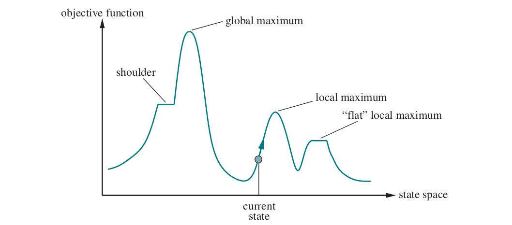
الگوریتم جستجوی تپهنوردی در شکل ۴.۲ نشان داده شده. یک حالت کنونی را پیگیری میکند و در هر تکرار به حالت همسایهای با بیشترین مقدار حرکت میکند — یعنی در جهتی میرود که «صعود تندترین» (Steepest Ascent) را فراهم میکند. وقتی به «قلهای» رسید که هیچ همسایهای مقدار بالاتر ندارد، پایان مییابد. تپهنوردی فراتر از همسایههای بلافصل حالت کنونی به جلو نمینگرد. این شبیه تلاش برای یافتن قلهٔ اورست در مه غلیظ در حالی است که از فراموشی رنج میبرید. توجه کنید یکی از راههای استفاده از جستجوی تپهنوردی، بهکارگیری منفیِ تابع هزینهٔ اکتشافی بهعنوان تابع هدف است؛ آنگاه بهصورت محلی به حالتی با کمترین فاصلهٔ اکتشافی تا هدف صعود میکند.
function HILL-CLIMBING(problem) returns a state that is a local maximum
current ← problem.INITIAL
while true do
neighbor ← highest-valued successor state of current
if VALUE(neighbor) ≤ VALUE(current) then return current
current ← neighborبرای نشان دادن تپهنوردی، از مسئلهٔ هشتوزیر (8-Queens) استفاده میکنیم (شکل ۴.۳). از صورتبندی حالت-کامل (Complete-State Formulation) استفاده میکنیم؛ یعنی هر حالت همهٔ مؤلفههای راهحل را دارد، اما ممکن است همه در جای درست نباشند. در این مورد هر حالت ۸ وزیر روی تخته دارد، در هر ستون یکی. حالت آغازین تصادفی برگزیده میشود و جانشینهای یک حالت، همهٔ حالتهای ممکنِ تولیدشده با جابهجایی یک وزیر به خانهای دیگر در همان ستوناند (پس هر حالت ۸×۷=۵۶ جانشین دارد). تابع هزینهٔ اکتشافی h شمار جفتوزیرهایی است که به هم حمله میکنند؛ این فقط برای راهحلها صفر است. (اگر دو مهره در یک خط باشند، حتی اگر مهرهای میانشان باشد، حمله شمرده میشود.) شکل ۴.۳(ب) حالتی با h=17 نشان میدهد. شکل همچنین مقادیر h همهٔ جانشینهایش را نشان میدهد.
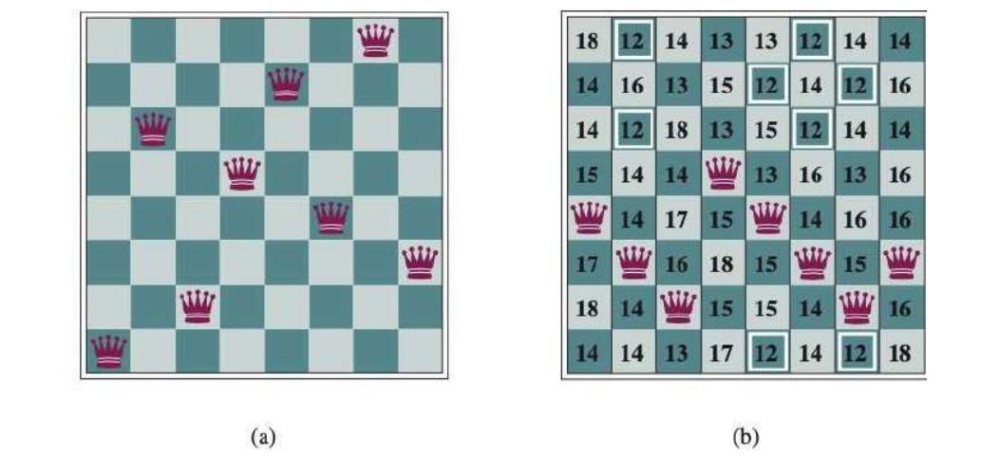
تپهنوردی گاهی «جستجوی محلی حریصانه» (Greedy Local Search) نامیده میشود، زیرا بدون اندیشیدن به اینکه بعداً به کجا برود، حالت همسایهٔ خوبی را میگیرد. هرچند حرص یکی از گناهان کبیره شمرده میشود، معلوم شده الگوریتمهای حریصانه اغلب عملکرد خوبی دارند. تپهنوردی میتواند بهسرعت به سوی راهحل پیشرفت کند، زیرا معمولاً بهبود حالت بد آسان است. برای نمونه، از حالت شکل ۴.۳(ب)، فقط پنج گام لازم است تا به حالت شکل ۴.۳(الف) برسیم که h=1 دارد و بسیار نزدیک به راهحل است.
متأسفانه، تپهنوردی میتواند به هر یک از دلایل زیر گیر کند:
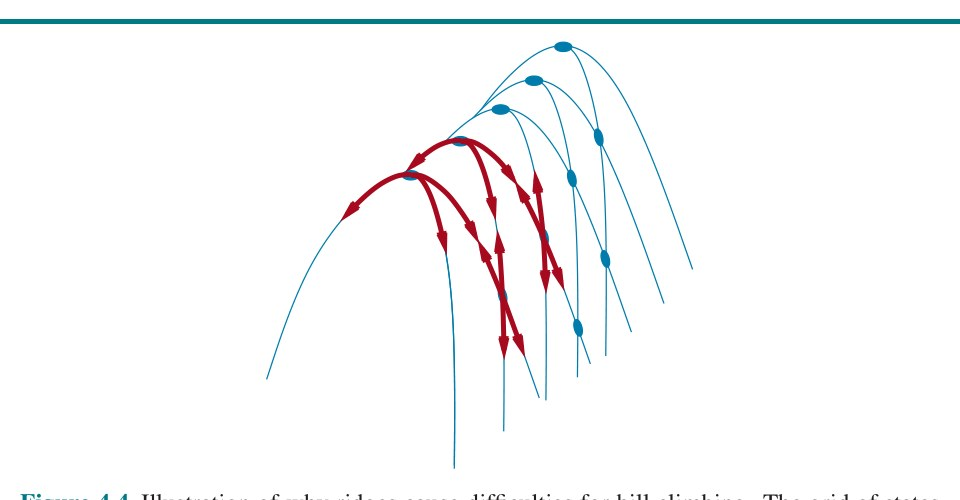
در هر مورد، الگوریتم به نقطهای میرسد که هیچ پیشرفتی حاصل نمیشود. با شروع از حالت تصادفی هشتوزیر، تپهنوردیِ صعود تندترین در ۸۶٪ مواقع گیر میکند و فقط ۱۴٪ نمونههای مسئله را حل میکند. از سوی دیگر، سریع کار میکند و در موفقیت فقط میانگین ۴ گام و در گیرکردن ۳ گام میبرد — برای فضای حالتی با 8⁸ ≈ ۱۷ میلیون حالت بد نیست. چگونه میتوانیم مسائل بیشتری حل کنیم؟ یک پاسخ آن است که هنگام رسیدن به فلات ادامه دهیم — «حرکت کناری» (Sideways Move) را به امید اینکه فلات واقعاً شانه است، چنانکه در شکل ۴.۱ نشان داده شده، مجاز کنیم. اما اگر واقعاً روی بیشینهٔ محلی تخت باشیم، این رویکرد تا ابد در فلات سرگردان خواهد بود. پس میتوانیم شمار حرکتهای کناریِ پیاپی را محدود کنیم و پس از مثلاً ۱۰۰ حرکت کناریِ پیاپی متوقف شویم. این درصد نمونههای حلشده توسط تپهنوردی را از ۱۴٪ به ۹۴٪ بالا میبرد. موفقیت هزینه دارد: الگوریتم بهطور میانگین حدود ۲۱ گام برای هر نمونهٔ موفق و ۶۴ گام برای هر شکست میبرد.
تغییرهای بسیاری برای تپهنوردی ابداع شده. «تپهنوردی تصادفی» (Stochastic Hill Climbing) بهصورت تصادفی از میان حرکتهای سربالایی برمیگزیند؛ احتمال انتخاب میتواند با تندیِ حرکت سربالایی تغییر کند. این معمولاً کندتر از صعود تندترین همگرا میشود، اما در برخی چشماندازهای حالت، راهحلهای بهتری مییابد. «تپهنوردی انتخاب-اول» (First-Choice Hill Climbing) تپهنوردی تصادفی را با تولید تصادفی جانشینها پیاده میکند تا آنکه جانشینی بهتر از حالت کنونی تولید شود. این راهبرد خوبی است وقتی حالتی جانشینهای فراوان (مثلاً هزاران) دارد.
تغییر دیگر «تپهنوردی با راهاندازی مجدد تصادفی» (Random-Restart Hill Climbing) است که این ضربالمثل را به کار میگیرد: «اگر نخستین بار موفق نشدی، دوباره و دوباره تلاش کن.» سلسلهای جستجوی تپهنوردی از حالتهای آغازینِ تصادفیتولیدشده انجام میدهد تا هدفی یافت شود. با احتمال ۱ کامل است، زیرا سرانجام حالت هدف را بهعنوان حالت آغازین تولید خواهد کرد. اگر هر جستجوی تپهنوردی احتمال موفقیت p داشته باشد، شمار مورد انتظار راهاندازیهای مجددِ لازم 1/p است. برای نمونههای هشتوزیر بدون حرکت کناری، p ≈ 0.14، پس برای یافتن هدف تقریباً ۷ تکرار لازم است (۶ شکست و ۱ موفقیت). شمار مورد انتظار گامها، هزینهٔ یک تکرار موفق بهعلاوهٔ (1−p)/p برابرِ هزینهٔ شکست است، یعنی در مجموع تقریباً ۲۲ گام. وقتی حرکت کناری مجاز باشد، بهطور میانگین 1/0.94 ≈ 1.06 تکرار لازم است و (1×21)+(0.06/0.94)×64 ≈ 25 گام. پس برای هشتوزیر، تپهنوردی با راهاندازی مجدد تصادفی واقعاً بسیار مؤثر است. حتی برای سه میلیون وزیر، این رویکرد میتواند در چند ثانیه راهحل بیابد.¹
موفقیت تپهنوردی بسیار به شکل چشمانداز فضای حالت بستگی دارد: اگر بیشینههای محلی و فلاتها اندک باشند، تپهنوردی با راهاندازی مجدد تصادفی خیلی سریع راهحل خوب مییابد. از سوی دیگر، بسیاری از مسائل واقعی چشماندازی دارند که بیشتر به خانوادهای پراکنده از جوجهتیغیهای کچل روی کف تخت میماند، با جوجهتیغیهای مینیاتوری که نوک هر خار زندگی میکنند. مسائل NP-سخت (پیوست الف را ببینید) معمولاً تعداد نمایی بیشینهٔ محلی برای گیرکردن دارند. با وجود این، پس از شمار کمی راهاندازی مجدد، اغلب میتوان بیشینهٔ محلی نسبتاً خوبی یافت.
الگوریتم تپهنوردی که هرگز حرکتهای «سراشیبی» به سوی حالتهای با مقدار کمتر (یا هزینهٔ بیشتر) انجام نمیدهد، همیشه در برابر گیرکردن در بیشینهٔ محلی آسیبپذیر است. در برابر، «گام تصادفی» (Random Walk)ِ ناب که بدون توجه به مقدار به حالت جانشین حرکت میکند، سرانجام به بیشینهٔ سراسری خواهد خورد، اما بسیار ناکارآمد خواهد بود. پس معقول مینماید تپهنوردی را با گام تصادفی چنان ترکیب کنیم که هم کارایی و هم کامل بودن به دست آید. «بازپخت شبیهسازیشده» (Simulated Annealing) چنین الگوریتمی است.
در متالورژی، بازپخت (Annealing) فرایندی است که برای معتدل یا سختکردن فلزات و شیشه به کار میرود: آنها را تا دمای بالا گرم میکنند و سپس بهتدریج سرد میکنند تا ماده به حالت بلوریِ کمانرژی برسد. برای توضیح بازپخت شبیهسازیشده، دیدگاهمان را از تپهنوردی به نزول گرادیان (یعنی کمینهکردن هزینه) تغییر میدهیم و تکلیف رساندن توپ پینگپنگ به ژرفترین شکاف سطحی بسیار ناهموار را تصور میکنیم. اگر فقط بگذاریم توپ غلت بخورد، در کمینهٔ محلی به آرامی میایستد. اگر سطح را بلرزانیم، میتوانیم توپ را از کمینهٔ محلی بیرون بپرانیم — شاید به کمینهٔ محلی ژرفتری که زمان بیشتری در آن بماند. حربه آن است که دقیقاً به اندازهای بلرزانیم که توپ از کمینههای محلی بیرون بپرد، اما نه آنقدر که از کمینهٔ سراسری بیرون بیفتد. راهحل بازپخت شبیهسازیشده آن است که با لرزش شدید (یعنی دمای بالا) آغاز کنیم و سپس شدت لرزش را بهتدریج کم کنیم (یعنی دما را پایین بیاوریم).
ساختار کلی الگوریتم بازپخت شبیهسازیشده (شکل ۴.۵) شبیه تپهنوردی است. اما بهجای برگزیدن بهترین حرکت، حرکتی تصادفی برمیگزیند. اگر حرکت وضعیت را بهبود دهد، همیشه پذیرفته میشود. وگرنه، الگوریتم حرکت را با احتمالی کمتر از ۱ میپذیرد. احتمال با «بدی» حرکت — مقدار ΔE که ارزیابی بدتر میشود — بهصورت نمایی کاهش مییابد. احتمال همچنین با پایینرفتن «دما»ی T کاهش مییابد: حرکتهای «بد» در آغاز که T بالاست بیشتر مجازند و با کاهش T نامحتملتر میشوند. اگر برنامهٔ زمانبندی T را بهاندازهٔ کافی آهسته به ۰ برساند، خاصیتی از توزیع بولتزمان، e^(ΔE/T)، آن است که همهٔ احتمال بر بیشینههای سراسری متمرکز میشود که الگوریتم با احتمال نزدیک به ۱ آنها را خواهد یافت.
function SIMULATED-ANNEALING(problem, schedule) returns a solution state
current ← problem.INITIAL
for t = 1 to ∞ do
T ← schedule(t)
if T = 0 then return current
next ← a randomly selected successor of current
ΔE ← VALUE(current) – VALUE(next)
if ΔE > 0 then current ← next
else current ← next only with probability e^(−ΔE/T)بازپخت شبیهسازیشده از دههٔ ۱۹۸۰ برای حل مسائل چیدمان VLSI به کار رفت. بهطور گسترده در زمانبندی کارخانه و دیگر تکلیفهای بهینهسازی بزرگمقیاس اعمال شده است.
نگهداشتن فقط یک گره در حافظه شاید واکنشی افراطی به مسئلهٔ محدودیتهای حافظه بنماید. الگوریتم جستجوی پرتوی محلی (Local Beam Search) بهجای فقط یک حالت، k حالت را پیگیری میکند. با k حالتِ تصادفیتولیدشده آغاز میکند. در هر گام، همهٔ جانشینهای هر k حالت تولید میشوند. اگر هر یک هدف باشد، الگوریتم میایستد. وگرنه، k جانشینِ برتر را از فهرست کامل برمیگزیند و تکرار میکند.
در نگاه نخست، جستجوی پرتوی محلی با k حالت شاید چیزی بیش از اجرای k راهاندازی مجدد تصادفی بهصورت موازی بهجای پیاپی نباشد. در واقع، دو الگوریتم کاملاً متفاوتاند. در جستجوی راهاندازی مجدد، هر فرایند جستجو مستقل از دیگران اجرا میشود. در جستجوی پرتوی محلی، اطلاعات مفید میان رشتههای موازی ردوبدل میشود. عملاً، حالتهایی که بهترین جانشینها را تولید میکنند به بقیه میگویند: «بیایید اینجا، علف اینجا سبزتر است!» الگوریتم بهسرعت جستجوهای بیثمر را رها میکند و منابعش را به جایی منتقل میکند که بیشترین پیشرفت در حال وقوع است.
جستجوی پرتوی محلی میتواند از فقدان تنوع میان k حالت رنج ببرد — آنها میتوانند در ناحیهٔ کوچکی از فضای حالت خوشهای شوند و جستجو را چیزی بیش از نسخهٔ k-برابر-کندترِ تپهنوردی نکنند. تغییری به نام جستجوی پرتوی تصادفی (Stochastic Beam Search)، مشابه تپهنوردی تصادفی، به تخفیف این مسئله کمک میکند. بهجای برگزیدن k جانشین برتر، جستجوی پرتوی تصادفی جانشینها را با احتمالی متناسب با مقدار جانشین برمیگزیند و بدین ترتیب تنوع را افزایش میدهد.
الگوریتمهای تکاملی (Evolutionary Algorithms) را میتوان تغییرهایی از جستجوی پرتوی تصادفی دانست که بهصراحت از استعارهٔ انتخاب طبیعی در زیستشناسی الهام گرفتهاند: جمعیتی از افراد (حالتها) هست که در آنها افرادِ برازندهترین (بالاترین مقدار) فرزندانی (حالتهای جانشین) تولید میکنند که نسل بعد را پر میکنند؛ فرایندی به نام بازترکیب (Recombination). شکلهای بیپایانی از الگوریتمهای تکاملی هست که از این نظرها متفاوتاند:
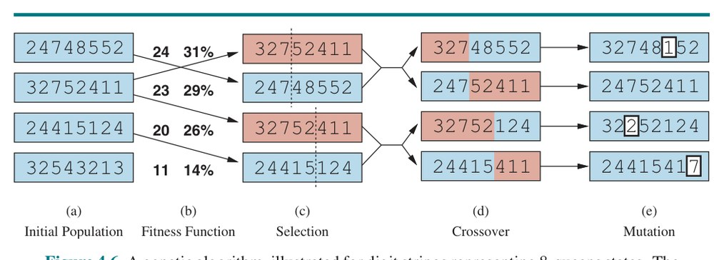
شکل ۴.۶(الف) جمعیتی از چهار رشتهٔ ۸رقمی را نشان میدهد که هر یک حالتی از معمای هشتوزیر را بازنمایی میکند: رقم c ام، شمار سطر وزیر در ستون c را نشان میدهد. در (ب)، هر حالت با تابع برازش رتبهبندی میشود. مقادیر برازش بالاتر بهترند، پس برای مسئلهٔ هشتوزیر از شمار جفتوزیرهای غیرحملهکننده استفاده میکنیم که برای راهحل مقدار 8×7/2 = 28 دارد. مقادیر چهار حالت در (ب) عبارتاند از ۲۴، ۲۳، ۲۰ و ۱۱. سپس امتیازهای برازش به احتمالها نرمال میشوند و مقادیر حاصل کنار مقادیر برازش در (ب) نشان داده شدهاند. در (ج)، دو جفت والد مطابق احتمالهای (ب) برگزیده میشوند. توجه کنید یک فرد دو بار برگزیده شده و یکی اصلاً برگزیده نشده. برای هر جفت برگزیده، نقطهٔ تلاقی (خط نقطهچین) تصادفی انتخاب میشود. در (د)، رشتههای والد را در نقطههای تلاقی تلاقی میدهیم و فرزندان تازه به دست میآیند. برای نمونه، نخستین فرزندِ نخستین جفت، سه رقم اول (۳۲۷) را از والد اول و رقمهای باقیمانده (۴۸۵۵۲) را از والد دوم میگیرد.
حالتهای هشتوزیرِ درگیر در این گام بازترکیب در شکل ۴.۷ نشان داده شدهاند.
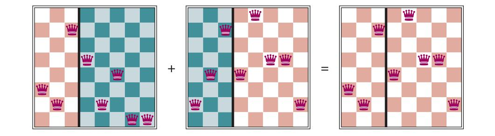
سرانجام، در (هـ)، هر مکان در هر رشته با احتمال کوچکِ مستقلی در معرض جهش تصادفی است. یک رقم در فرزندان اول، سوم و چهارم جهش یافت. در مسئلهٔ هشتوزیر، این با برگزیدن تصادفی وزیری و حرکتدادنش به خانهای تصادفی در ستونش متناظر است. اغلب چنین است که جمعیت در آغاز فرایند متنوع است، پس تلاقی در آغاز جستجو گامهای بزرگِ مکرری در فضای حالت برمیدارد (مانند بازپخت شبیهسازیشده). پس از نسلهای فراوان انتخاب به سوی برازش بالاتر، جمعیت متنوعتر میشود و گامهای کوچکتر معمولترند. شکل ۴.۸ الگوریتمی را توصیف میکند که همهٔ این گامها را پیاده میکند.
function GENETIC-ALGORITHM(population, fitness) returns an individual
repeat
weights ← WEIGHTED-BY(population, fitness)
population2 ← an empty list
for i = 1 to SIZE(population) do
parent1, parent2 ← WEIGHTED-RANDOM-CHOICES(population, weights, 2)
child ← REPRODUCE(parent1, parent2)
if (a small random probability) then child ← MUTATE(child)
add child to population2
population ← population2
until an individual is sufficiently fit, or enough time has passed
return the best individual in population, according to fitnessالگوریتمهای ژنتیک شبیه جستجوی پرتوی تصادفیاند، اما با افزودهشدن عملیات تلاقی. این اگر بلوکهایی باشند که کارکردهای مفید انجام میدهند سودمند است. برای نمونه، ممکن است گذاشتن سه وزیر اول در موقعیتهای ۲، ۴ و ۶ (جایی که به هم حمله نمیکنند) بلوک مفیدی بسازد که بتوان با دیگر بلوکهای مفیدِ حاضر در افراد دیگر ترکیبش کرد تا راهحل ساخته شود. بهشکل ریاضی میتوان نشان داد اگر بلوکها هدفی نداشته باشند — برای نمونه اگر موقعیتهای کد ژنتیک تصادفی درهمآمیخته شده باشند — تلاقی هیچ برتریای منتقل نمیکند.
نظریهٔ الگوریتمهای ژنتیک با ایدهٔ «شِما» (Schema) توضیح میدهد این چگونه کار میکند؛ شِما زیررشتهای است که در آن برخی موقعیتها را میتوان نامشخص گذاشت. برای نمونه، شِما 246***** همهٔ حالتهای هشتوزیری را توصیف میکند که سه وزیر اول در موقعیتهای ۲، ۴ و ۶ هستند. رشتههایی که با شِما همخواناند (مانند 24613578) «مصداق»های (Instances) شِما نامیده میشوند. میتوان نشان داد اگر میانگین برازش مصداقهای شِما بالاتر از میانگین باشد، شمار مصداقهای شِما در طول زمان رشد خواهد کرد. بدیهی است این اثر اگر بیتهای مجاور کاملاً بیارتباط با هم باشند بعید است چشمگیر باشد، زیرا بلوکهای پیوستهٔ کمی خواهند بود که منفعت سازگاری میدهند. الگوریتمهای ژنتیک وقتی بهترین عملکرد را دارند که شِماها با مؤلفههای معنادار راهحل متناظر باشند. برای نمونه، اگر رشته بازنمایی آنتن باشد، شِماها ممکن است مؤلفههای آنتن مانند بازتابندهها و منحرفکنندهها را بازنمایی کنند. مؤلفهٔ خوب به احتمال زیاد در گسترهای از طراحیهای گوناگون خوب است. این پیشنهاد میکند استفادهٔ موفق از الگوریتمهای ژنتیک مستلزم مهندسی دقیق بازنمایی است.
در عمل، الگوریتمهای ژنتیک جای خود را در چشمانداز گستردهٔ روشهای بهینهسازی دارند (مارلر و آرورا، ۲۰۰۴)، بهویژه برای مسائل ساختاریافتهٔ پیچیده مانند چیدمان مدار یا زمانبندی کارگاه، و اخیراً برای تکامل معماری شبکههای عصبی عمیق (میکولاینن و همکاران، ۲۰۱۹). روشن نیست چقدر از جذابیت الگوریتمهای ژنتیک از برتریشان در تکلیفهای خاص ناشی میشود و چقدر از استعارهٔ جذاب تکامل.
جعبه: تکامل و جستجو
نظریهٔ تکامل توسط چارلز داروین در «خاستگاه گونهها از راه انتخاب طبیعی» (۱۸۵۹) و مستقل از او توسط آلفرد راسل والاس (۱۸۵۸) توسعه یافت. ایدهٔ مرکزی ساده است: تغییرها در تولیدمثل رخ میدهند و در نسلهای پیاپی تقریباً بهتناسب اثرشان بر برازش تولیدمثلی حفظ میشوند. نظریهٔ داروین بدون هیچ دانشی از چگونگی وراثت و اصلاح ویژگیهای جانداران توسعه یافت. قوانین احتمالاتی حاکم بر این فرایندها نخستین بار توسط گرگور مندل (۱۸۶۶) — راهبی که با نخودفرنگی آزمایش کرد — شناسایی شد. بسیار بعدتر، واتسون و کریک (۱۹۵۳) ساختار مولکول DNA و الفبای آن، AGTC (آدنین، گوانین، تیمین، سیتوزین)، را شناسایی کردند. در الگوی استاندارد، تغییر هم با جهشهای نقطهای در توالی حروف و هم با «تلاقی» (که در آن DNA فرزند با ترکیب بخشهای بلند DNA هر والد تولید میشود) رخ میدهد.
قیاس با الگوریتمهای جستجوی محلی پیشتر توصیف شد؛ تفاوت اصلی میان جستجوی پرتوی تصادفی و تکامل، استفاده از تولیدمثل جنسی است که در آن جانشینها از چند فرد تولید میشوند نه فقط یک فرد. سازوکارهای واقعی تکامل اما بسیار غنیتر از آناند که بیشتر الگوریتمهای ژنتیک اجازه میدهند. برای نمونه، جهشها میتوانند شامل وارونگی، تکرار و جابهجایی تکههای بزرگ DNA باشند؛ برخی ویروسها DNA را از یک جاندار قرض میگیرند و در جاندار دیگر وارد میکنند؛ و ژنهای جابهجاشوندهای هست که هیچ کاری نمیکنند جز هزاران بار خود را درون ژنوم کپی کردن. حتی ژنهایی هست که یاختههای همسری که آن ژن را حمل نمیکنند مسموم میکنند و بدین ترتیب شانس تکثیر خودشان را افزایش میدهند. مهمترین واقعیت آن است که خودِ ژنها سازوکارهایی را رمزگذاری میکنند که ژنوم بهواسطهٔ آنها بازتولید و به جاندار ترجمه میشود. در الگوریتمهای ژنتیک، آن سازوکارها برنامهٔ جدایی هستند که درون رشتههای دستکاریشده بازنمایی نشدهاند.
تکامل داروینی ممکن است ناکارآمد بنماید، زیرا کورکورانه حدود 1043 جاندار تولید کرده بدون آنکه اکتشافیهای جستجویش را ذرهای بهبود دهد. اما یادگیری در تکامل نقش دارد. هرچند طبیعتدان بزرگ فرانسوی، ژان لامارک (۱۸۰۹)، در این پیشنهاد که ویژگیهای اکتسابیِ سازگاری در طول زندگی جاندار به فرزندانش منتقل میشوند نادرست بود، نظریهٔ ظاهراً مشابه جیمز بالدوین (۱۸۹۶) درست است: یادگیری میتواند چشمانداز برازش را بهشکل مؤثری نرم کند و به شتاب در نرخ تکامل بینجامد. جاندارِ دارای ویژگیای که کاملاً برای محیطش سازگار نیست، آن ویژگی را منتقل میکند اگر به اندازهٔ کافی انعطافپذیری (Plasticity) هم داشته باشد تا یاد بگیرد بهشیوهای سودمند با محیط سازگار شود. شبیهسازیهای رایانهای (هینتون و نولان، ۱۹۸۷) تأیید میکنند این «اثر بالدوین» واقعی است و پیامدی که دارد آن است که چیزهای دشوار برای یادگیری سرانجام در ژنوم مینشینند، اما چیزهای آسان برای یادگیری لازم نیست آنجا باشند (مورگان و گریفیتس، ۲۰۱۵).
در فصل ۲ تمایز میان محیطهای گسسته و پیوسته را توضیح دادیم و اشاره کردیم بیشتر محیطهای جهان واقعی پیوستهاند. فضای کنش پیوسته ضریب انشعاب بینهایت دارد و بنابراین با بیشتر الگوریتمهایی که تاکنون پوشش دادهایم (بهجز تپهنوردی انتخاب-اول و بازپخت شبیهسازیشده) قابل مدیریت نیست. این بخش مقدمهٔ بسیار کوتاهی بر برخی فنون جستجوی محلی برای فضاهای پیوسته است. ادبیات این موضوع گسترده است؛ بسیاری از فنون پایه از سدهٔ هفدهم، پس از توسعهٔ حساب دیفرانسیل توسط نیوتن و لایبنیتس، سرچشمه گرفتهاند.² در چند نقطه از این کتاب از این فنون استفاده میکنیم، از جمله فصلهای یادگیری، بینایی و رباتیک.
با مثالی آغاز میکنیم. فرض کنیم میخواهیم سه فرودگاه تازه را هر جایی در رومانی بگذاریم، چنانکه مجموع مجذور فاصلههای خط مستقیم از هر شهر روی نقشه تا نزدیکترین فرودگاهش کمینه شود. (برای نقشهٔ رومانی شکل ۳.۱ را ببینید.) فضای حالت پس با مختصات سه فرودگاه تعریف میشود: (x1,y1)، (x2,y2) و (x3,y3). این فضایی ششبعدی است؛ همچنین میگوییم حالتها با شش متغیر (Variables) تعریف میشوند. در حالت کلی، حالتها با بردار n-بعدی از متغیرها، x، تعریف میشوند. حرکت در این فضا با حرکت یک یا چند فرودگاه روی نقشه متناظر است. تابع هدف f(x) = f(x1,y1,x2,y2,x3,y3) برای هر حالت خاص نسبتاً آسان محاسبه میشود، بهمحض آنکه نزدیکترین شهرها را محاسبه کنیم. فرض کنیم Ci مجموعهٔ شهرهایی باشد که نزدیکترین فرودگاهشان (در حالت x) فرودگاه i است. آنگاه داریم:
f(x) = f(x1, y1, x2, y2, x3, y3) = ∑ᵢ ∑_{c∈Ci} [(xi − xc)² + (yi − yc)²] (4.1)این معادله نه فقط برای حالت x، بلکه برای حالتهای همسایگی محلی x نیز درست است. در بسیاری موارد اما این معادله بهصورت بسته قابل حل نیست. برای نمونه، با سه فرودگاه، عبارت گرادیان به این بستگی دارد که کدام شهرها در حالت کنونی به هر فرودگاه نزدیکترند. این بدان معناست که میتوانیم گرادیان را بهصورت محلی (نه سراسری) محاسبه کنیم؛ برای نمونه:
∂f/∂x1 = 2 ∑_{c∈C1} (x1 − xc) (4.2)با داشتن عبارتِ بهصورت محلی درستِ گرادیان، میتوانیم تپهنوردی صعود تندترین را با بهروزرسانی حالت کنونی طبق فرمول انجام دهیم:
x ← x + α ∇f(x)که α (آلفا) ثابت کوچکی است که اغلب «اندازهٔ گام» (Step Size) نامیده میشود. روشهای بسیار متنوعی برای تنظیم α هست. مسئلهٔ پایه آن است که اگر α خیلی کوچک باشد، گامهای زیادی لازم است؛ اگر خیلی بزرگ باشد، جستجو میتواند از بیشینه عبور کند. فن «جستجوی خطی» (Line Search) میکوشد این دوراهه را با امتداد دادن جهت گرادیان کنونی — معمولاً با دوبلکردن مکرر α — حل کند تا آنکه f دوباره شروع به کاهش کند. نقطهای که این رخ میدهد حالت کنونیِ تازه میشود. چند مکتب فکری دربارهٔ چگونگی انتخاب جهت تازه در این نقطه هست.
برای بسیاری از مسائل، مؤثرترین الگوریتم، روش کهن نیوتن–رافسون (Newton–Raphson) است. این فن عمومی برای یافتن ریشههای توابع است — یعنی حل معادلات به شکل g(x)=0. با محاسبهٔ تخمین تازهای برای ریشهٔ x طبق فرمول نیوتن کار میکند:
x ← x − g(x) / g′(x)برای یافتن بیشینه یا کمینهٔ f، باید x را چنان بیابیم که گرادیان بردار صفر باشد (یعنی ∇f(x)=0). پس g(x) در فرمول نیوتن به ∇f(x) تبدیل میشود و معادلهٔ بهروزرسانی را میتوان بهصورت ماتریس–بردار نوشت:
x ← x − Hf⁻¹(x) ∇f(x)که Hf(x) «ماتریس هسیان» (Hessian) مشتقهای دوم است که درایههایش Hij = ∂²f/∂xi∂xj داده میشوند. برای مثال فرودگاههای ما، از معادلهٔ (۴.۲) میبینیم Hf(x) بهویژه ساده است: درایههای غیرقطری صفرند و درایههای قطری برای فرودگاه i فقط دو برابر شمار شهرهای Ci هستند. محاسبهای کوتاه نشان میدهد یک گام از بهروزرسانی، فرودگاه i را مستقیماً به مرکز ثقل Ci میبرد که کمینهٔ عبارت محلی f از معادلهٔ (۴.۱) است.³ اما برای مسائل پرابعاد، محاسبهٔ n² درایهٔ هسیان و وارونکردنش ممکن است پرهزینه باشد، پس نسخههای تقریبی فراوانی از روش نیوتن–رافسون توسعه یافته.
روشهای جستجوی محلی در فضاهای حالت پیوسته به همان اندازهٔ فضاهای گسسته از بیشینههای محلی، خطالرأسها و فلاتها رنج میبرند. راهاندازی مجدد تصادفی و بازپخت شبیهسازیشده اغلب کمککنندهاند. فضاهای پیوستهٔ پرابعاد اما مکانهای بزرگی هستند که گمشدن در آنها بسیار آسان است.
موضوع پایانی «بهینهسازی مقید» (Constrained Optimization) است. مسئلهٔ بهینهسازی مقید است اگر راهحلها باید قیدهای سختی بر مقادیر متغیرها برآورده کنند. برای نمونه، در مسئلهٔ مکانیابی فرودگاه، ممکن است قید کنیم مکانها داخل رومانی و روی خشکی باشند (نه وسط دریاچهها). دشواری مسائل بهینهسازی مقید به سرشت قیدها و تابع هدف بستگی دارد. شناختهشدهترین رده، مسائل برنامهریزی خطی (Linear Programming) است که در آن قیدها باید نابرابریهای خطیِ سازندهٔ مجموعهٔ محدب⁴ باشند و تابع هدف نیز خطی. پیچیدگی زمانی برنامهریزی خطی در شمار متغیرها چندجملهای است.
جعبه: مجموعهٔ S از نقطهها محدب (Convex) است اگر خطِ واصل هر دو نقطه در S نیز در S باشد. تابع محدب تابعی است که فضای «بالای» آن مجموعهٔ محدبی بسازد؛ طبق تعریف، توابع محدب هیچ کمینهٔ محلی (در برابر سراسری) ندارند.
برنامهریزی خطی احتمالاً پرکاربردترین و بهطور گستردهای مطالعهشدهترین روش بهینهسازی است. حالت خاصی از مسئلهٔ عمومیتر «بهینهسازی محدب» (Convex Optimization) است که به ناحیهٔ قید اجازه میدهد هر ناحیهٔ محدبی باشد و تابع هدف هر تابعی که درون ناحیهٔ قید محدب است. تحت شرایطی، مسائل بهینهسازی محدب نیز بهصورت چندجملهای حلشدنیاند و ممکن است در عمل با هزاران متغیر عملی باشند. چند مسئلهٔ مهم در یادگیری ماشین و نظریهٔ کنترل را میتوان بهصورت مسائل بهینهسازی محدب صورتبندی کرد (فصل ۲۰ را ببینید).
در فصل ۳ محیط کاملاً قابل مشاهده، جبرگرایانه و شناختهشده را فرض کردیم. پس عامل میتواند حالت آغازین را مشاهده کند، توالی کنشی را که به هدف میرسد محاسبه کند و کنشها را با «چشمهای بسته» اجرا کند و هرگز مجبور نباشد از ادراکهای حسیاش استفاده کند.
اما وقتی محیط تا حدی قابل مشاهده باشد، عامل بهطور قطعی نمیداند در کدام حالت است؛ و وقتی محیط ناجبرگرایانه باشد، عامل نمیداند پس از انجام کنش به کدام حالت گذار میکند. این بدان معناست که بهجای اندیشیدن «من در حالت s1 هستم و اگر کنش a را انجام دهم به حالت s2 میرسم»، عامل اکنون چنین میاندیشد: «من یا در حالت s1 هستم یا s3، و اگر کنش a را انجام دهم به حالت s2، s4 یا s5 میرسم.» مجموعهٔ حالتهای فیزیکی را که عامل باور دارد ممکناند، «حالت باور» (Belief State) مینامیم.
در محیطهای تا حدی قابل مشاهده و ناجبرگرایانه، راهحل مسئله دیگر توالی نیست، بلکه «برنامهٔ شرطی» (Conditional Plan) است (که گاهی برنامهٔ احتیاطی (Contingency Plan) یا راهبرد نامیده میشود) و مشخص میکند بسته به ادراکهایی که عامل هنگام اجرای برنامه دریافت میکند چه کند. در این بخش ناجبرگرایی و در بخش بعد مشاهدهناپذیری تا حدی را بررسی میکنیم.
جهان جاروبرقی فصل ۲ هشت حالت دارد، چنانکه در شکل ۴.۹. سه کنش هست — Right، Left و Suck — و هدف تمیزکردن همهٔ کثیفیهاست (حالتهای ۷ و ۸). اگر محیط کاملاً قابل مشاهده، جبرگرایانه و کاملاً شناختهشده باشد، مسئله با هر یک از الگوریتمهای فصل ۳ بهراحتی حل میشود و راهحل توالی کنشی است. برای نمونه، اگر حالت آغازین ۱ باشد، توالی کنش [Suck, Right, Suck] به حالت هدف ۸ میرسد.
حال فرض کنیم ناجبرگرایی را در قالب جاروبرقیِ قدرتمند اما ناهنجار (Erratic) معرفی کنیم. در جهان جاروبرقی ناهنجار، کنش Suck چنین کار میکند:
برای ارائهٔ صورتبندی دقیق این مسئله، باید مفهوم مدل گذار فصل ۳ را تعمیم دهیم. بهجای تعریف مدل گذار با تابع RESULT که یک حالت پیامدی بازمیگرداند، از تابع RESULTS استفاده میکنیم که مجموعهای از حالتهای پیامدیِ ممکن بازمیگرداند. برای نمونه، در جهان جاروبرقی ناهنجار، کنش Suck در حالت ۱ یا فقط مکان کنونی را تمیز میکند یا هر دو مکان را:
RESULTS(1, Suck) = {5, 7}اگر از حالت ۱ آغاز کنیم، هیچ توالی کنشیِ تکی مسئله را حل نمیکند، اما این برنامهٔ شرطی حل میکند:
[Suck, if State=5 then [Right, Suck] else []] (4.3)در اینجا میبینیم برنامهٔ شرطی میتواند گامهای if-then-else داشته باشد؛ این بدان معناست راهحلها درختاند نه توالی. در اینجا شرط در if آزمایش میکند حالت کنونی چیست؛ این چیزی است که عامل هنگام اجرا قادر به مشاهدهاش خواهد بود، اما هنگام برنامهریزی نمیداند. از سوی دیگر، میتوانستیم صورتبندیای داشته باشیم که ادراک حسی را آزمایش کند نه حالت را. بسیاری از مسائل جهان فیزیکیِ واقعی مسائل احتیاطیاند، زیرا پیشبینی دقیق آینده ناممکن است. به همین دلیل، بسیاری از مردم هنگام راهرفتن چشمهایشان را باز نگه میدارند.
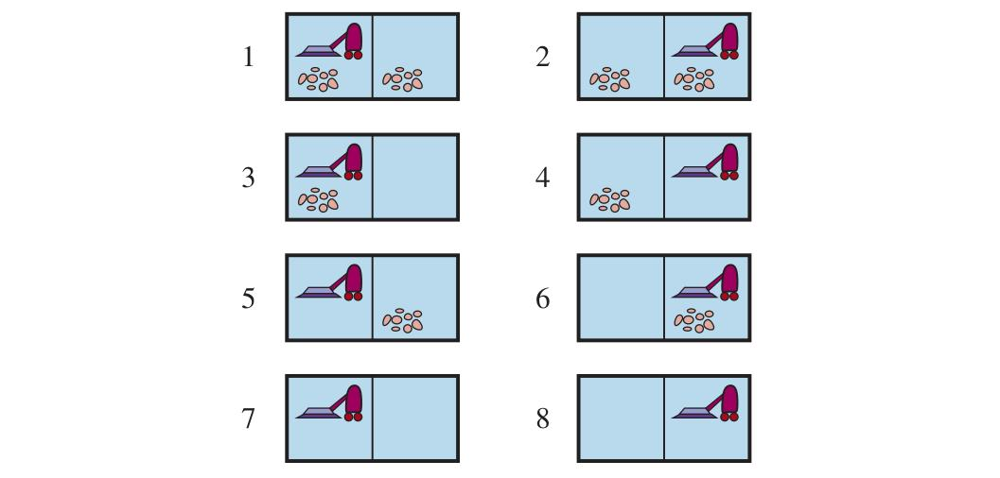
چگونه این راهحلهای شرطی را برای مسائل ناجبرگرایانه مییابیم؟ مانند فصل ۳، با ساختن درختهای جستجو آغاز میکنیم، اما در اینجا درختها خصلت متفاوتی دارند. در محیط جبرگرایانه، تنها انشعاب توسط انتخابهای خودِ عامل در هر حالت معرفی میشود: میتوانم این کنش یا آن کنش را انجام دهم. این گرهها را گرههای OR (Or Node) مینامیم. در جهان جاروبرقی، برای نمونه، در گرهٔ OR عامل Left یا Right یا Suck را برمیگزیند. در محیط ناجبرگرایانه، انشعاب همچنین توسط انتخابِ محیط از پیامدِ هر کنش معرفی میشود. این گرهها را گرههای AND (And Node) مینامیم. برای نمونه، کنش Suck در حالت ۱ به حالت باور {5,7} میانجامد، پس عامل باید برنامهای برای حالت ۵ و حالتی برای ۷ بیابد. این دو نوع گره در هم میآیند و به «درخت AND–OR» (AND–OR Tree) میانجامند، چنانکه در شکل ۴.۱۰ نشان داده شده.
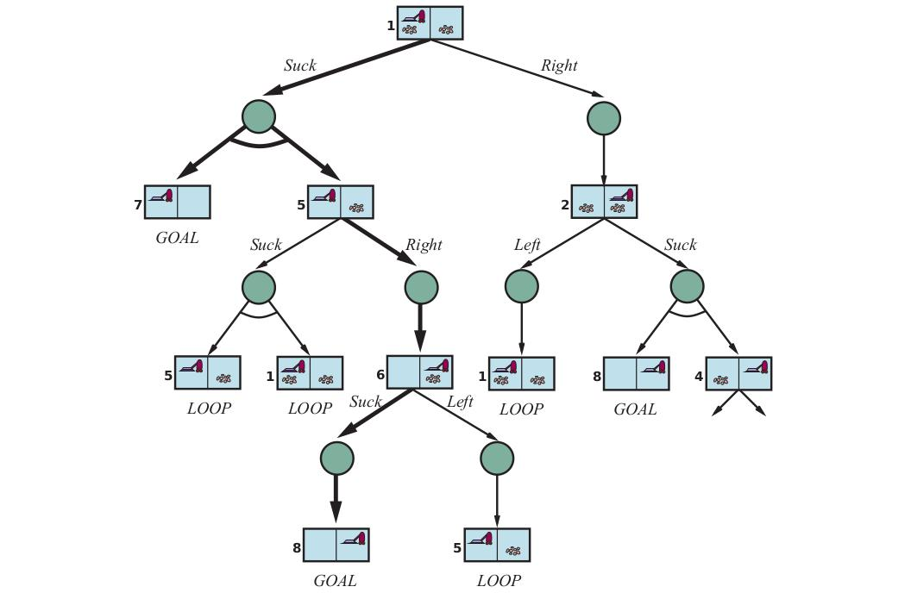
راهحل مسئلهٔ جستجوی AND–OR، زیردرختی از درخت جستجوی کامل است که (۱) در هر برگ، گرهٔ هدف داشته باشد، (۲) در هر یک از گرههای OR خود یک کنش مشخص کند، و (۳) در هر یک از گرههای AND خود هر شاخهٔ پیامدی را در بر بگیرد. راهحل با خطهای ضخیم در شکل نشان داده شده؛ با برنامهٔ معادلهٔ (۴.۳) متناظر است.
شکل ۴.۱۱ الگوریتم بازگشتیِ عمق-اولی برای جستجوی گراف AND–OR میدهد. یکی از جنبههای کلیدی الگوریتم، شیوهٔ برخوردش با چرخههاست که اغلب در مسائل ناجبرگرایانه رخ میدهند (مثلاً اگر کنشی گاهی اثری نداشته باشد یا اگر اثری ناخواسته قابل اصلاح باشد). اگر حالت کنونی با حالتی در مسیر از ریشه یکسان باشد، با شکست بازمیگردد. این به این معنا نیست که از حالت کنونی راهحلی نیست؛ صرفاً بدان معناست که اگر راهحل غیرچرخهای باشد، باید از تجسمِ پیشینِ حالت کنونی قابل دسترسی باشد، پس تجسم تازه را میتوان دور ریخت. با این بررسی، اطمینان حاصل میکنیم الگوریتم در هر فضای حالت متناهی پایان مییابد، زیرا هر مسیر باید به هدف، بنبست یا حالت تکراری برسد. توجه کنید الگوریتم بررسی نمیکند حالت کنونی تکرار حالتی در مسیر دیگری از ریشه است یا نه، که برای کارایی مهم است.
function AND-OR-SEARCH(problem) returns a conditional plan, or failure
return OR-SEARCH(problem, problem.INITIAL, [])
function OR-SEARCH(problem, state, path) returns a conditional plan, or failure
if problem.IS-GOAL(state) then return empty plan
if IS-CYCLE(path) then return failure
for each action in problem.ACTIONS(state) do
plan ← AND-SEARCH(problem, RESULTS(state, action), [state] + path)
if plan ≠ failure then return [action] + plan
return failure
function AND-SEARCH(problem, states, path) returns a conditional plan, or failure
for each si in states do
plani ← OR-SEARCH(problem, si, path)
if plani = failure then return failure
return [if s1 then plan1 else if s2 then plan2 else ... if sn−1 then plann−1 else plann]گرافهای AND–OR را میتوان سطح-اول یا بهترین-اول کاوش کرد. مفهوم تابع اکتشافی باید اصلاح شود تا هزینهٔ راهحل شرطی را تخمین بزند نه توالی را، اما مفهوم مقبولیت منتقل میشود و همارز الگوریتم A∗ برای یافتن راهحلهای بهینه هست. (یادداشتهای کتابشناختی پایان فصل را ببینید.)
جهان جاروبرقی «لغزنده» (Slippery) را در نظر بگیرید که با جهان جاروبرقی معمولی (غیرناهنجار) یکسان است، بهجز آنکه کنشهای حرکتی گاهی شکست میخورند و عامل در همان مکان میماند. برای نمونه، حرکت Right در حالت ۱ به حالت باور {1,2} میانجامد. شکل ۴.۱۲ بخشی از گراف جستجو را نشان میدهد؛ بدیهی است دیگر هیچ راهحل غیرچرخهای از حالت ۱ نیست و AND-OR-SEARCH با شکست بازمیگردد. اما راهحل چرخهای (Cyclic Solution) هست: ادامهٔ Right تا وقتی کار کند. میتوانیم این را با سازهٔ تازهٔ while بیان کنیم:
[Suck, while State=5 do Right, Suck]یا با افزودن برچسبی برای نشان دادن بخشی از برنامه و ارجاع بعدی به آن برچسب:
[Suck, L1: Right, if State=5 then L1 else Suck]چهوقت برنامهٔ چرخهای راهحل است؟ شرط کمینه آن است که هر برگ حالت هدف باشد و برگ از هر نقطهٔ برنامه قابل دسترسی باشد. افزون بر آن، باید علت ناجبرگرایی را در نظر بگیریم. اگر واقعاً چنین است که سازوکار محرک ربات جاروبرقی برخی اوقات کار میکند، اما در موارد دیگر تصادفی و مستقل لیز میخورد، آنگاه عامل میتواند مطمئن باشد اگر کنش به اندازهٔ کافی تکرار شود، سرانجام کار خواهد کرد و برنامه موفق خواهد شد. اما اگر ناجبرگرایی بهسبب واقعیتی مشاهدهنشده دربارهٔ ربات یا محیط باشد — شاید تسمهٔ محرک پاره شده و ربات هرگز حرکت نخواهد کرد — تکرار کنش کمکی نخواهد کرد.
یکی از راههای فهم این تصمیم آن است که بگوییم صورتبندی مسئلهٔ آغازین (کاملاً قابل مشاهده، ناجبرگرایانه) به نفع صورتبندی متفاوتی (تا حدی قابل مشاهده، جبرگرایانه) رها میشود که در آن شکست برنامهٔ چرخهای به ویژگیِ مشاهدهنشدهای از تسمهٔ محرک نسبت داده میشود. در فصل ۱۲ بحث میکنیم چگونه تصمیم بگیریم کدام یک از چند امکانِ نامطمئن محتملتر است.
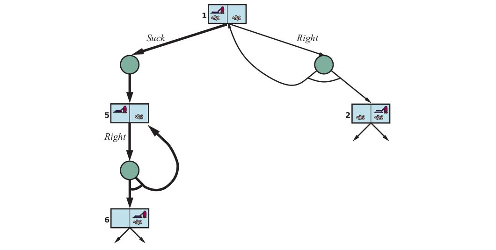
اکنون به مسئلهٔ مشاهدهناپذیری تا حدی میپردازیم، جایی که ادراکهای حسی عامل برای تعیین دقیق حالت کافی نیستند. این بدان معناست که برخی از کنشهای عامل در جهت کاهش عدم قطعیت دربارهٔ حالت کنونی خواهند بود.
وقتی ادراکهای حسی عامل اصلاً اطلاعاتی فراهم نمیکنند، به آنچه «مسئلهٔ بیحسگر» (Sensorless Problem) (یا مسئلهٔ سازگار (Conformant Problem)) میگوییم میرسیم. در آغاز شاید فکر کنید عامل بیحسگر هیچ امیدی به حل مسئله ندارد اگر هیچ ایدهای از حالت آغازینش نداشته باشد، اما راهحلهای بیحسگر بهشکل شگفتآوری رایج و مفیدند، در درجهٔ نخست بهسبب آنکه به کارکرد درست حسگرها تکیه نمیکنند. در سامانههای تولیدی، برای نمونه، روشهای هوشمندانهٔ بسیاری برای جهتدهی درست قطعات از موقعیت آغازین ناشناخته با توالیای از کنشها و بدون هیچ حسی توسعه یافته. گاهی برنامهٔ بیحسگر حتی وقتی برنامهٔ شرطی با حسکردن در دسترس است بهتر است. برای نمونه، پزشکان اغلب آنتیبیوتیک طیفوسیع تجویز میکنند بهجای برنامهٔ شرطیِ آزمایش خون، سپس انتظار برای بازگشت نتایج، و سپس تجویز آنتیبیوتیک خاصتر. برنامهٔ بیحسگر در زمان و پول صرفهجویی میکند و از ریسک وخیمشدن عفونت پیش از آمادهشدن نتایج آزمایش میپرهیزد.
نسخهٔ بیحسگر جهان جاروبرقی (جبرگرایانه) را در نظر بگیرید. فرض کنیم عامل جغرافیای جهانش را میداند، اما مکان خودش یا توزیع کثیفی را نه. در آن صورت، حالت باور آغازینش {1,2,3,4,5,6,7,8} است (شکل ۴.۹ را ببینید). حال اگر عامل به راست حرکت کند، در یکی از حالتهای {2,4,6,8} خواهد بود — عامل بدون ادراک هیچچیز اطلاعات به دست آورده است! پس از [Right, Suck] عامل همیشه در یکی از حالتهای {4,8} خواهد بود. سرانجام، پس از [Right, Suck, Left, Suck] عامل تضمینشده به حالت هدف ۷ میرسد، صرفنظر از حالت آغازین. میگوییم عامل میتواند جهان را به حالت ۷ «وادار» (Coercion) کند.
راهحل مسئلهٔ بیحسگر توالی کنش است، نه برنامهٔ شرطی (زیرا هیچ ادراکی نیست). اما در فضای حالتهای باور جستجو میکنیم نه حالتهای فیزیکی.⁶ در فضای حالت باور، مسئله کاملاً قابل مشاهده است، زیرا عامل همیشه حالت باور خودش را میداند. وانگهی، راهحل (اگر باشد) مسئلهٔ بیحسگر همیشه توالی کنش است. این بهسبب آن است که مانند مسائل عادی فصل ۳، ادراکهای دریافتی پس از هر کنش کاملاً قابل پیشبینیاند — همیشه خالیاند! پس هیچ احتیاطی برای برنامهریزی نیست. این حتی اگر محیط ناجبرگرایانه باشد نیز صادق است.
میتوانستیم الگوریتمهای تازهای برای مسائل جستجوی بیحسگر معرفی کنیم. اما در عوض، میتوانیم از الگوریتمهای موجود فصل ۳ استفاده کنیم اگر مسئلهٔ فیزیکی زیرین را به مسئلهٔ حالت باور تبدیل کنیم که در آن بر حالتهای باور جستجو میکنیم نه حالتهای فیزیکی. مسئلهٔ اصلی P مؤلفههای ActionsP, ResultP و... دارد و مسئلهٔ حالت باور مؤلفههای زیر را دارد:
ACTIONS(b) = ⋃_{s∈b} ACTIONS_P(s)از سوی دیگر، اگر کنش غیرقانونی ممکن است به فاجعه بینجامد، ایمنتر است فقط اشتراک را مجاز کنیم، یعنی مجموعهٔ کنشهای قانونی در همهٔ حالتها. برای جهان جاروبرقی، هر حالت همان کنشهای قانونی را دارد، پس هر دو روش همان نتیجه را میدهند.
b′ = RESULT(b, a) = {s′ : s′ = RESULT_P(s, a) و s ∈ b} (4.4)با ناجبرگرایی، حالت باور تازه شامل همهٔ نتایج ممکنِ اعمال کنش به هر یک از حالتهای حالت باور کنونی است:
b′ = RESULT(b, a) = {s′ : s′ ∈ RESULTS_P(s, a) و s ∈ b} = ⋃_{s∈b} RESULTS_P(s, a)اندازهٔ b′ برای کنشهای جبرگرایانه همان یا کوچکتر از b خواهد بود، اما با کنشهای ناجبرگرایانه ممکن است بزرگتر از b باشد (شکل ۴.۱۳ را ببینید).
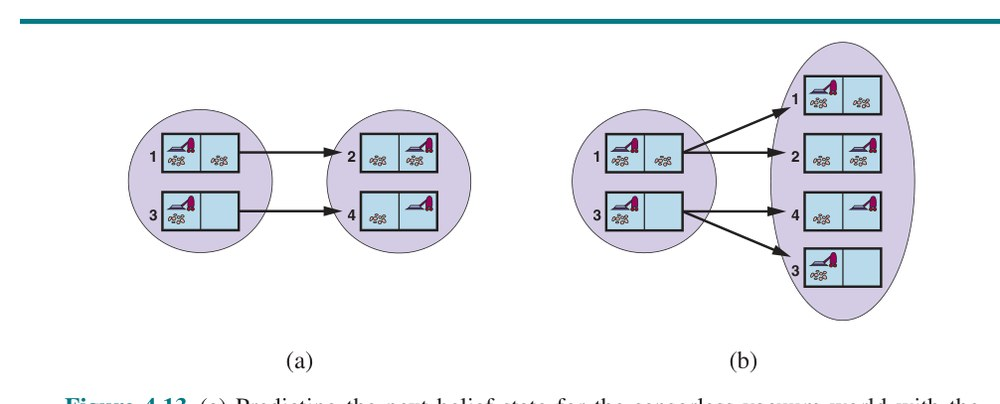
شکل ۴.۱۴ فضای حالت باورِ قابل دسترسی را برای جهان جاروبرقی بیحسگر جبرگرایانه نشان میدهد. از 2⁸ = ۲۵۶ حالت باور ممکن، فقط ۱۲ حالت باور قابل دسترسی است. تعریفهای پیشین ساخت خودکار صورتبندی مسئلهٔ حالت باور را از تعریف مسئلهٔ فیزیکی زیرین ممکن میکنند. پس از آن، میتوانیم مسائل بیحسگر را با هر یک از الگوریتمهای جستجوی معمول فصل ۳ حل کنیم.
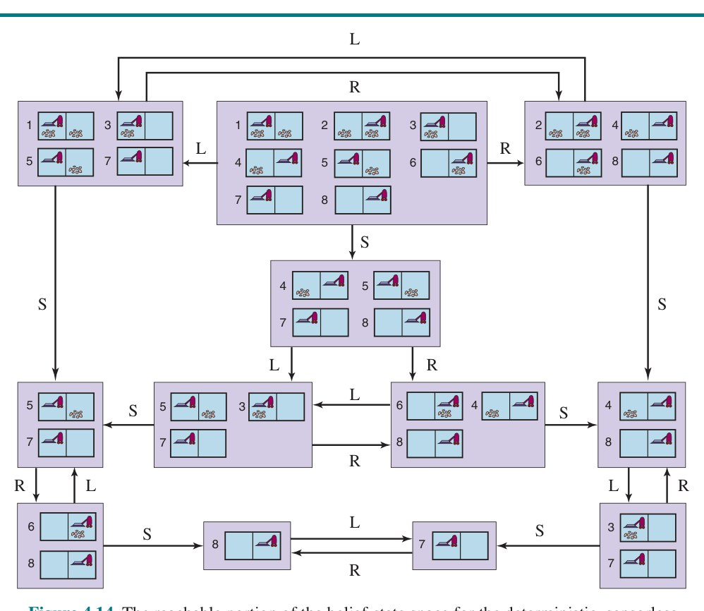
در جستجوی گرافی معمول، حالتهای تازهرسیده آزمایش میشوند که آیا قبلاً رسیده شدهاند. این برای حالتهای باور نیز کار میکند؛ برای نمونه، در شکل ۴.۱۴، توالی کنش [Suck, Left, Suck] از حالت آغازین به همان حالت باوری میرسد که [Right, Left, Suck] میرسد، یعنی {5,7}. حال، حالت باورِ رسیدهشده توسط [Left]، یعنی {1,3,5,7} را در نظر بگیرید. بدیهی است این با {5,7} یکسان نیست، اما «فوقمجموعه» آن است. میتوانیم هر چنین حالت باور فوقمجموعهای را دور بریزیم (هرس کنیم). چرا؟ زیرا راهحل از {1,3,5,7} باید برای هر یک از حالتهای منفرد ۱، ۳، ۵ و ۷ راهحل باشد و بنابراین برای هر ترکیبی از این حالتهای منفرد، مانند {5,7} نیز راهحل است؛ پس لازم نیست تلاش کنیم {1,3,5,7} را حل کنیم، میتوانیم روی حلِ حالت باورِ بهوضوح آسانترِ {5,7} تمرکز کنیم. برعکس، اگر {1,3,5,7} قبلاً تولید و حلشدنی یافته شده باشد، هر زیرمجموعهای مانند {5,7} تضمینشده حلشدنی است. (اگر راهحلی داشته باشم که وقتی بسیار سردرگمم دربارهٔ حالتم کار میکند، وقتی کمتر سردرگمم نیز کار خواهد کرد.) این سطح اضافی از هرس میتواند کارایی حل مسئلهٔ بیحسگر را بهشکل چشمگیری بهبود دهد.
اما حتی با این بهبود، حل مسئلهٔ بیحسگرِ چنانکه توصیف کردیم بهندرت در عمل شدنی است. یکی از مسائل، وسعت فضای حالت باور است — در فصل پیشین دیدیم اغلب فضای جستجوی اندازهٔ N بیش از حد بزرگ است و اکنون فضاهای جستجوی اندازهٔ 2ᴺ داریم. وانگهی، هر عنصر فضای جستجو مجموعهای تا N عنصر است. برای N بزرگ، حتی بازنمایی یک حالت باور واحد را بدون تمامشدن حافظه نخواهیم توانست. یک راهحل آن است که حالت باور را با توصیف فشردهتری بازنمایی کنیم. به انگلیسی، میتوانیم بگوییم عامل در حالت آغازین «هیچچیز» میداند؛ پس از حرکت به چپ، میتوانیم بگوییم «در ستون راستترین نیست»، و الی آخر. فصل ۷ توضیح میدهد چگونه این را در طرح بازنمایی صوری انجام دهیم.
رویکرد دیگر آن است که از الگوریتمهای جستجوی استاندارد بپرهیزیم که حالتهای باور را مانند هر حالت مسئلهٔ دیگر جعبهٔ سیاه میدانند. در عوض، میتوانیم به درون حالتهای باور نگاه کنیم و الگوریتمهای جستجوی حالت باورِ افزایشی (Incremental Belief-State Search) توسعه دهیم که راهحل را یک حالت فیزیکی در هر بار میسازند. برای نمونه، در جهان جاروبرقی بیحسگر، حالت باور آغازین {1,2,3,4,5,6,7,8} است و باید توالی کنشی بیابیم که در هر ۸ حالت کار کند. میتوانیم این کار را با یافتن نخست راهحلی که برای حالت ۱ کار میکند انجام دهیم؛ سپس بررسی کنیم آیا برای حالت ۲ کار میکند؛ اگر نه، برگردیم و راهحل متفاوتی برای حالت ۱ بیابیم، و الی آخر.
درست همانگونه که جستجوی AND–OR باید برای هر شاخه در گرهٔ AND راهحلی بیابد، این الگوریتم باید برای هر حالت در حالت باور راهحلی بیابد؛ تفاوت در آن است که جستجوی AND–OR میتواند برای هر شاخه راهحل متفاوتی بیابد، حال آنکه جستجوی حالت باور افزایشی باید یک راهحل بیابد که برای همهٔ حالتها کار کند.
مزیت اصلی رویکرد افزایشی آن است که معمولاً میتواند شکست را سریع تشخیص دهد — وقتی حالت باوری حلنشدنی است، معمولاً چنین است که زیرمجموعهٔ کوچکی از حالت باور، شامل چند حالت نخستِ بررسیشده، نیز حلنشدنی است. در برخی موارد، این به شتابی متناسب با اندازهٔ حالتهای باور میانجامد که خودشان ممکن است به اندازهٔ فضای حالت فیزیکی بزرگ باشند.
بسیاری از مسائل بدون حسکردن قابل حل نیستند. برای نمونه، معمای ۸ بیحسگر ناممکن است. از سوی دیگر، کمی حسکردن میتواند راهِ دوری برود: اگر فقط گوشهٔ بالا-چپ را ببینیم میتوانیم معمای ۸ را حل کنیم. راهحل شامل حرکتدادن تکتک هر کاشی به خانهٔ قابل مشاهده و پیگیری مکانش از آن پس است.
برای مسئلهٔ تا حدی قابل مشاهده، مشخصات مسئله تابع PERCEPT(s) را مشخص میکند که ادراک دریافتی عامل در حالتِ دادهشده را بازمیگرداند. اگر حسکردن ناجبرگرایانه باشد، میتوانیم از تابع PERCEPTS استفاده کنیم که مجموعهای از ادراکهای ممکن بازمیگرداند. برای مسائل کاملاً قابل مشاهده، PERCEPT(s)=s برای هر حالت s، و برای مسائل بیحسگر PERCEPT(s)=null.
جهان جاروبرقی با حسکردن محلی را در نظر بگیرید که در آن عامل حسگر موقعیتی دارد که در خانهٔ چپ ادراک L و در خانهٔ راست ادراک R میدهد، و حسگر کثیفی که وقتی خانهٔ کنونی کثیف است Dirty و وقتی تمیز است Clean میدهد. پس ادراک در حالت ۱ برابر [L,Dirty] است. با مشاهدهناپذیری تا حدی، معمولاً چند حالت همان ادراک را تولید میکنند؛ حالت ۳ نیز [L,Dirty] تولید میکند. از این رو، با این ادراک آغازین، حالت باور آغازین {1,3} خواهد بود.
میتوانیم به مدل گذار میان حالتهای باور برای مسائل تا حدی قابل مشاهده در سه مرحله بیندیشیم، چنانکه در شکل ۴.۱۵ نشان داده شده:
POSSIBLE-PERCEPTS(b̂) = {o : o = PERCEPT(s) و s ∈ b̂}bo = UPDATE(b̂, o) = {s : o = PERCEPT(s) و s ∈ b̂}عامل باید هنگام برنامهریزی با ادراکهای ممکن سروکار داشته باشد، زیرا تا اجرای برنامه ادراکهای واقعی را نخواهد دانست. توجه کنید ناجبرگرایی در محیط فیزیکی میتواند حالت باور را در مرحلهٔ پیشبینی بزرگ کند، اما هر حالت باور بهروزشدهٔ bo نمیتواند بزرگتر از حالت باور پیشبینیشدهٔ b̂ باشد؛ مشاهدهها فقط میتوانند به کاهش عدم قطعیت کمک کنند. وانگهی، برای حسکردن جبرگرایانه، حالتهای باورِ ادراکهای ممکنِ متفاوت ناهمپوش خواهند بود و افرازی از حالت باور پیشبینیشدهٔ اصلی میسازند. با کنار هم گذاشتن این سه مرحله، حالتهای باورِ ممکنِ حاصل از کنشِ دادهشده و ادراکهای ممکنِ پسین را به دست میآوریم:
RESULTS(b, a) = {bo : bo = UPDATE(PREDICT(b, a), o) و o ∈ POSSIBLE-PERCEPTS(PREDICT(b, a))} (4.5)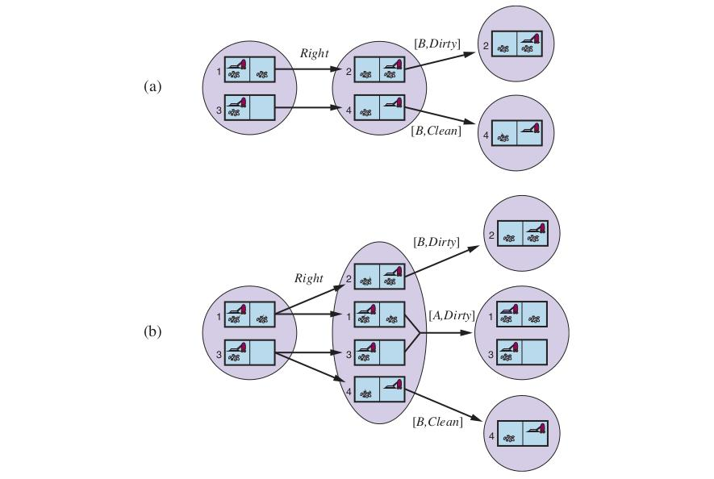
بخش پیشین نشان داد چگونه تابع RESULTS را برای مسئلهٔ حالت باورِ ناجبرگرایانه از مسئلهٔ فیزیکی زیرین با توجه به تابع PERCEPT مشتق کنیم. با این صورتبندی، الگوریتم جستجوی AND–OR شکل ۴.۱۱ را میتوان مستقیماً برای استخراج راهحل اعمال کرد. شکل ۴.۱۶ بخشی از درخت جستجو را برای جهان جاروبرقی با حسکردن محلی نشان میدهد، با فرض ادراک آغازین [A,Dirty]. راهحل برنامهٔ شرطی [Suck, Right, if Bstate={6} then Suck else []] است.
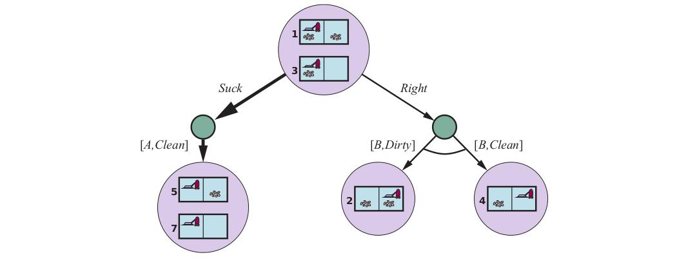
توجه کنید چون مسئلهٔ حالت باور را به الگوریتم جستجوی AND–OR دادیم، برنامهٔ شرطیای بازگرداند که حالت باور را آزمایش میکند نه حالت واقعی را. این چنانکه باید است: در محیط تا حدی قابل مشاهده، عامل حالت واقعی را نخواهد دانست.
مانند مورد الگوریتمهای جستجوی استانداردِ اعمالشده بر مسائل بیحسگر، الگوریتم جستجوی AND–OR حالتهای باور را مانند هر حالت دیگر جعبهٔ سیاه میداند. میتوان با بررسی حالتهای باورِ قبلاً تولیدشده که زیرمجموعه یا فوقمجموعهٔ حالت کنونیاند، درست مانند مسائل بیحسگر، این را بهبود داد. همچنین میتوان الگوریتمهای جستجوی افزایشی مشابه آنچه برای مسائل بیحسگر توصیف شد مشتق کرد که شتابهای چشمگیری بر رویکرد جعبهٔ سیاه میدهند.
عاملِ محیطهای تا حدی قابل مشاهده مسئلهای صورتبندی میکند، الگوریتم جستجویی (مانند AND-OR-SEARCH) برای حلش فراخوانی میکند و راهحل را اجرا میکند. دو تفاوت اصلی میان این عامل و عاملِ محیطهای کاملاً قابل مشاهده و جبرگرایانه هست.
نخست، راهحل برنامهٔ شرطی خواهد بود نه توالی؛ برای اجرای عبارت if-then-else، عامل باید شرط را آزمایش کند و شاخهٔ مناسب شرطی را اجرا کند. دوم، عامل باید حالت باورش را هنگام انجام کنشها و دریافت ادراکها نگه دارد. این فرایند شبیه فرایند پیشبینی–مشاهده–بهروزرسانی معادلهٔ (۴.۵) است اما در واقع سادهتر است، زیرا ادراک توسط محیط داده میشود نه محاسبه توسط عامل. با حالت باور آغازین b، کنش a و ادراک o، حالت باور تازه چنین است:
b′ = UPDATE(PREDICT(b, a), o) (4.6)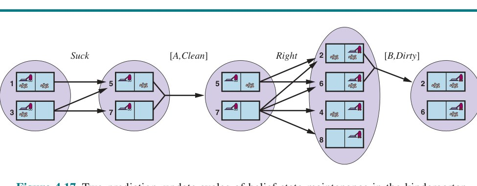
جهان جاروبرقی «کودکستانی» (Kindergarten) را در نظر بگیرید که در آن عاملها فقط حالت خانهٔ کنونیشان را حس میکنند و هر خانهای ممکن است در هر زمان کثیف شود، مگر آنکه عامل در همان لحظه فعالانه تمیزش کند.⁷ شکل ۴.۱۷ حالت باورِ نگهداریشده در این محیط را نشان میدهد.
در محیطهای تا حدی قابل مشاهده — که اکثریت قریب به اتفاق محیطهای جهان واقعی را شامل میشود — نگهداری حالت باور کارکردی هستهای هر سامانهٔ هوشمند است. این کارکرد با نامهای گوناگونی خوانده میشود: پایش (Monitoring)، پالایش (Filtering) و تخمین حالت (State Estimation). معادلهٔ (۴.۶) «تخمینگر حالت بازگشتی» (Recursive State Estimator) نامیده میشود، زیرا حالت باور تازه را از حالت قبلی محاسبه میکند نه با بررسی کل توالی ادراک. اگر عامل قرار نیست «عقب بماند»، محاسبه باید به سرعتی که ادراکها وارد میشوند رخ دهد. با پیچیدهتر شدن محیط، عامل فقط زمان محاسبهٔ حالت باورِ تقریبی را خواهد داشت، شاید با تمرکز بر پیامدهای ادراک برای جنبههایی از محیط که در حال حاضر مورد علاقهاند. بیشتر کار روی این مسئله برای محیطهای تصادفی با حالت پیوسته و با ابزارهای نظریهٔ احتمال انجام شده، چنانکه در فصل ۱۴ توضیح داده میشود. در این بخش مثالی در محیط گسسته با حسگرهای جبرگرایانه و کنشهای ناجبرگرایانه نشان میدهیم.
مثال دربارهٔ رباتی با تکلیف تخمین حالتِ خاصی به نام «جایگاهسازی» (Localization) است: فهمیدن اینکه کجاست، با داشتن نقشهٔ جهان و توالیای از ادراکها و کنشها. ربات ما در محیط مارپیچمانند شکل ۴.۱۸ گذاشته شده. ربات به چهار حسگر صوتی (سونار) مجهز است که میگویند آیا مانعی — دیوار بیرونی یا خانهٔ تیرهسایهخورده در شکل — در هر یک از چهار جهت اصلی هست. ادراک به شکل بردار بیتی است، برای هر یک از جهتهای شمال، شرق، جنوب و غرب به همین ترتیب یک بیت؛ پس 1011 یعنی موانعی در شمال، جنوب و غرب هست اما نه شرق. فرض میکنیم حسگرها دادهٔ کاملاً درست میدهند و ربات نقشهٔ درستی از محیط دارد. اما متأسفانه سامانهٔ ناوبری ربات خراب است، پس وقتی کنش Right را اجرا میکند، تصادفی به یکی از خانههای مجاور حرکت میکند. تکلیف ربات تعیین مکان کنونیاش است.
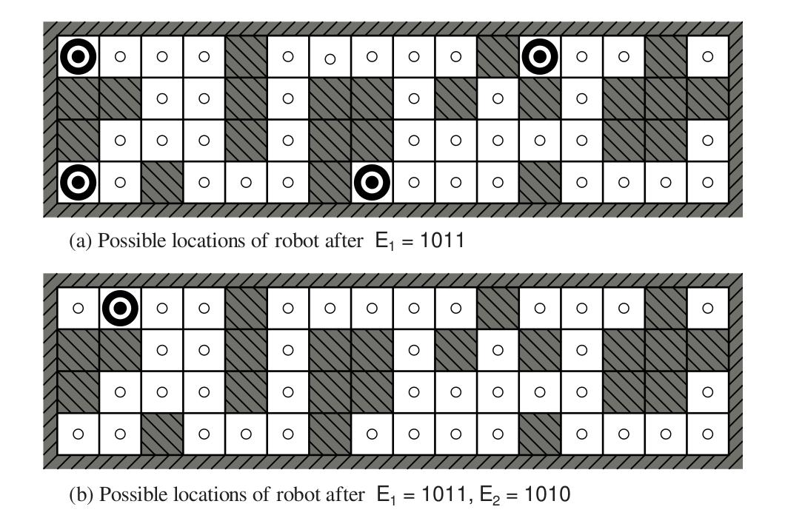
فرض کنیم ربات تازه روشن شده و نمیداند کجاست — حالت باور آغازینش b مجموعهٔ همهٔ مکانهاست. ربات سپس ادراک 1011 را دریافت و با معادلهٔ bo = UPDATE(1011) بهروزرسانی انجام میدهد و ۴ مکانی را میدهد که در شکل ۴.۱۸(الف) نشان داده شده. میتوانید مارپیچ را بررسی کنید و ببینید آنها تنها چهار مکانی هستند که ادراک 1011 را تولید میکنند. سپس ربات کنش Right را اجرا میکند، اما نتیجه ناجبرگرایانه است. حالت باور تازه، ba = PREDICT(bo, Right)، شامل همهٔ مکانهایی است که یک قدم از مکانهای bo فاصله دارند. وقتی ادراک دوم، 1010، میرسد، ربات UPDATE(ba, 1010) را انجام میدهد و مییابد حالت باور به مکان تکیِ نشاندادهشده در شکل ۴.۱۸(ب) فروریخته است. این تنها مکانی است که میتواند نتیجهٔ UPDATE(PREDICT(UPDATE(b, 1011), Right), 1010) باشد.
با کنشهای ناجبرگرایانه، گام PREDICT حالت باور را بزرگ میکند، اما گام UPDATE آن را دوباره کوچک میکند — تا وقتی ادراکها اطلاعات شناساییِ مفیدی فراهم کنند. گاهی ادراکها برای جایگاهسازی چندان کمکی نمیکنند: اگر یک یا چند راهروی بلند شرقی-غربی بود، ربات میتوانست توالی بلندی از ادراکهای 1010 دریافت کند، اما هرگز نداند در کجای راهرو(ها)ست. اما برای محیطهای با تنوع جغرافیایی معقول، جایگاهسازی اغلب بهسرعت به نقطهٔ تکی همگرا میشود، حتی وقتی کنشها ناجبرگرایانهاند.
اگر حسگرها معیوب باشند چه؟ اگر فقط با منطق بولی بتوانیم استدلال کنیم، باید هر بیت حسگر را درست یا نادرست بدانیم، که همان نداشتن هیچ اطلاعات ادراکی است. اما خواهیم دید استدلال احتمالاتی (فصل ۱۲) به ما امکان میدهد از حسگر معیوب اطلاعات مفید استخراج کنیم، تا وقتی کمتر از نیمی از اوقات اشتباه کند.
تاکنون بر عاملهایی تمرکز کردهایم که از الگوریتمهای جستجوی آفلاین (Offline Search) استفاده میکنند. آنها پیش از برداشتن نخستین کنش، راهحل کامل محاسبه میکنند. در برابر، عامل جستجوی آنلاین (Online Search)⁸ محاسبه و کنش را در هم میآمیزد: نخست کنشی برمیدارد، سپس محیط را مشاهده و کنش بعدی را محاسبه میکند. جستجوی آنلاین در محیطهای پویا یا نیمهپویا ایدهٔ خوبی است، جایی که برای نشستن و محاسبهٔ بیش از حد طولانی جریمه هست. جستجوی آنلاین در حوزههای ناجبرگرایانه نیز مفید است، زیرا به عامل امکان میدهد تلاش محاسباتیاش را بر احتیاطهایی متمرکز کند که واقعاً رخ میدهند نه آنهایی که ممکن است رخ دهند اما احتمالاً نخواهند. البته دادوستدی هست: هرچه عامل بیشتر از پیش برنامهریزی کند، کمتر خود را بیدستمایه در جریان مییابد.
در محیطهای ناشناخته، که عامل نمیداند چه حالتهایی وجود دارند یا کنشهایش چه میکنند، عامل باید کنشهایش را بهعنوان آزمایش برای یادگیری دربارهٔ محیط به کار گیرد. نمونهٔ شاخص جستجوی آنلاین «مسئلهٔ نقشهسازی» (Mapping Problem) است: رباتی در ساختمانی ناشناخته گذاشته میشود و باید کاوش کند تا نقشهای بسازد که بعداً برای رفتن از A به B به کار رود. روشهای گریز از هزارتوها — دانش لازمِ قهرمانان مشتاق دوران باستان — نیز نمونههایی از الگوریتمهای جستجوی آنلایناند. کاوش فضایی تنها شکل کاوش آنلاین نیست. نوزاد تازهبهدنیاآمده را در نظر بگیرید: کنشهای ممکن بسیاری دارد اما پیامد هیچکدام را نمیداند و فقط چند حالتِ ممکن را تجربه کرده که میتواند به آنها برسد.
مسئلهٔ جستجوی آنلاین با درهمآمیختن محاسبه، حسکردن و کنش حل میشود. با فرض محیط جبرگرایانه و کاملاً قابل مشاهده آغاز میکنیم (فصل ۱۷ این فرضها را شل میکند) و مقرر میکنیم عامل فقط موارد زیر را میداند:
برای نمونه، در مسئلهٔ هزارتوی شکل ۴.۱۹، عامل نمیداند رفتن به بالا از (1,1) به (1,2) میرسد؛ و پس از آنکه چنین کرد، نمیداند رفتن به پایین او را به (1,1) بازمیگرداند. این درجه از نادانی در برخی کاربردها قابل کاهش است — برای نمونه، ربات کاوشگر ممکن است بداند کنشهای حرکتیاش چگونه کار میکنند و فقط از مکان موانع بیاطلاع باشد. سرانجام، عامل ممکن است به تابع اکتشافی مقبول h(s) دسترسی داشته باشد که فاصلهٔ حالت کنونی تا حالت هدف را تخمین میزند. برای نمونه، در شکل ۴.۱۹، عامل ممکن است مکان هدف را بداند و بتواند از اکتشافی فاصلهٔ منهتن استفاده کند (صفحهٔ ۹۷).
معمولاً هدف عامل رسیدن به حالت هدف با کمینهکردن هزینه است. (هدف ممکن دیگر صرفاً کاوش کل محیط است.) هزینه، هزینهٔ کل مسیری است که عامل هنگام سفر متحمل میشود. رایج است این هزینه را با هزینهٔ مسیری مقایسه کنند که عامل اگر فضای جستجو را از پیش میدانست متحمل میشد — یعنی مسیر بهینه در محیط شناختهشده. به زبان الگوریتمهای آنلاین، این مقایسه «نسبت رقابتی» (Competitive Ratio) نامیده میشود؛ میخواهیم تا حد ممکن کوچک باشد.
کاوشگران آنلاین در برابر بنبستها (Dead Ends) آسیبپذیرند: حالتهایی که از آنها هیچ حالت هدفی قابل دسترسی نیست. اگر عامل نداند هر کنش چه میکند، ممکن است کنش «پرش به چاه بیپایان» را اجرا کند و هرگز به هدف نرسد. در حالت کلی، هیچ الگوریتمی نمیتواند در همهٔ فضاهای حالت از بنبستها بپرهیزد. دو فضای حالت بنبستدار شکل ۴.۲۰(الف) را در نظر بگیرید. الگوریتم جستجوی آنلاینی که حالتهای S و A را بازدید کرده نمیتواند بگوید در حالت بالایی است یا پایینی؛ بر اساس آنچه عامل دیده، دو حالت یکسان مینمایند. پس هیچ راهی نیست که بداند در هر دو فضای حالت چگونه کنش درست را برگزیند.
این نمونهای از «استدلال حریف» (Adversary Argument) است — میتوانیم حریفی را تصور کنیم که فضای حالت را هنگام کاوش عامل میسازد و هدفها و بنبستها را هر جا که بخواهد میگذارد، چنانکه در شکل ۴.۲۰(ب). بنبستها دشواری واقعی برای کاوش رباتاند — پلهها، سطحهای شیبدار، پرتگاهها، خیابانهای یکطرفه و حتی زمین طبیعی همه حالتهایی دارند که برخی کنشها در آنها برگشتناپذیرند (Irreversible Action) — هیچ راهی برای بازگشت به حالت قبلی نیست. الگوریتم کاوشی که ارائه میکنیم فقط در فضاهای حالتی تضمینشده کار میکند که «بهشکل ایمن قابل کاوش» (Safely Explorable) باشند — یعنی از هر حالت قابل دسترسی، حالتی هدف قابل دسترسی باشد. فضاهای حالت با فقط کنشهای برگشتپذیر، مانند هزارتوها و معمای ۸، بدیهی است بهشکل ایمن قابل کاوشاند (اگر اصلاً راهحلی داشته باشند). موضوع کاوش ایمن را در بخش ۲۲.۳.۲ با ژرفای بیشتری پوشش میدهیم.
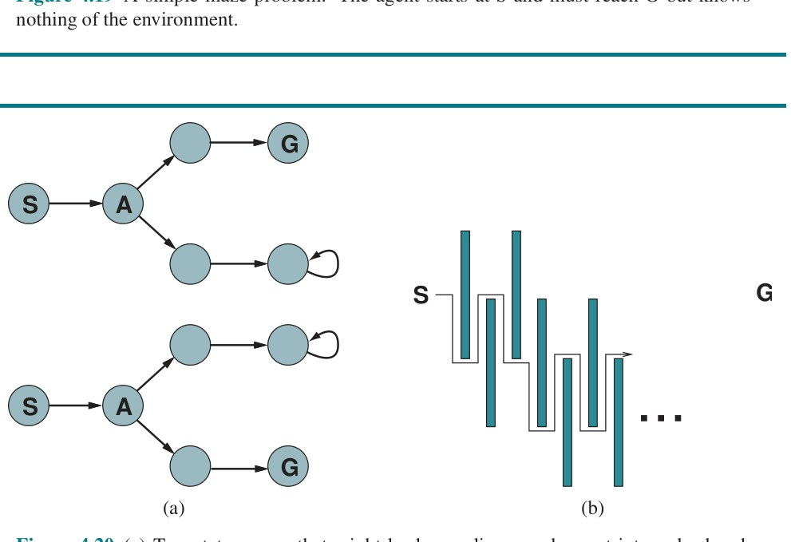
حتی در محیطهای بهشکل ایمن قابل کاوش، اگر مسیرهای با هزینهٔ بیکران وجود داشته باشند، هیچ نسبت رقابتی کرانداری قابل تضمین نیست. نشاندادن این در محیطهای با کنشهای برگشتناپذیر آسان است، اما در واقع برای حالت برگشتپذیر نیز صادق میماند، چنانکه شکل ۴.۲۰(ب) نشان میدهد. به همین دلیل، رایج است عملکرد الگوریتمهای جستجوی آنلاین را بر حسب اندازهٔ کل فضای حالت توصیف کنیم نه فقط عمق کمعمقترین هدف.
پس از هر کنش، عامل آنلاین در محیط قابل مشاهده، ادراکی دریافت میکند که به او میگوید به چه حالتی رسیده؛ از این اطلاعات میتواند نقشهٔ محیطش را بیفزاید. سپس از نقشهٔ بهروزشده برای برنامهریزی اینکه بعداً کجا برود استفاده میشود. این درهمآمیختن برنامهریزی و کنش بدان معناست که الگوریتمهای جستجوی آنلاین کاملاً با الگوریتمهای جستجوی آفلاینِ قبلاًدیدهشده متفاوتاند: الگوریتمهای آفلاین مدلشان از فضای حالت را کاوش میکنند، حال آنکه الگوریتمهای آنلاین جهان واقعی را کاوش میکنند. برای نمونه، A∗ میتواند گرهای در بخشی از فضا گسترش دهد و سپس بلافاصله گرهای در بخشی دور از فضا گسترش دهد، زیرا گسترش گره شامل کنشهای شبیهسازیشده است نه واقعی.
الگوریتم آنلاین اما فقط برای حالتی که فیزیکیاً در آن است میتواند جانشینها را کشف کند. برای پرهیز از سفر تمامراه تا حالتی دور برای گسترش گرهٔ بعدی، بهتر مینماید گرهها را به ترتیبی محلی گسترش دهد. جستجوی عمق-اول دقیقاً این ویژگی را دارد، زیرا (بهجز هنگام بازگشت الگوریتم) گرهٔ بعدیگسترشیافته فرزند گرهٔ قبلیگسترشیافته است. عامل کاوش عمق-اول آنلاین (برای کنشهای جبرگرایانه اما ناشناخته) در شکل ۴.۲۱ نشان داده شده.
function ONLINE-DFS-AGENT(problem, s′) returns an action
persistent:
s, a, the previous state and action, initially null
result, a table mapping (s, a) to s′, initially empty
untried, a table mapping s to a list of untried actions
unbacktracked, a table mapping s to a list of states never backtracked to
if problem.IS-GOAL(s′) then return stop
if s′ is a new state (not in untried) then untried[s′] ← problem.ACTIONS(s′)
if s is not null then
result[s, a] ← s′
add s to the front of unbacktracked[s′]
if untried[s′] is empty then
if unbacktracked[s′] is empty then return stop
else a ← an action b such that result[s′, b] = POP(unbacktracked[s′])
else a ← POP(untried[s′])
s ← s′
return aاین عامل نقشهاش را در جدولی به نام result[s,a] ذخیره میکند که حالتی را ثبت میکند که از اجرای کنش a در حالت s حاصل میشود. (برای کنشهای ناجبرگرایانه، عامل میتواند مجموعهای از حالتها را در result[s,a] ثبت کند.) هرگاه حالت کنونی کنشهای کاوشنشده داشته باشد، عامل یکی از آن کنشها را میآزماید. دشواری وقتی پیش میآید که عامل همهٔ کنشهای یک حالت را آزموده باشد. در جستجوی عمق-اول آفلاین، حالت صرفاً از صف حذف میشود؛ در جستجوی آنلاین، عامل باید در جهان فیزیکی به عقب برگردد (Backtrack). در جستجوی عمق-اول، این به معنای بازگشت به حالتی است که عامل تازهترین بار از آن وارد حالت کنونی شده. برای دستیابی به این، الگوریتم جدول دیگری نگه میدارد که برای هر حالت، حالتهای پیشین را فهرست میکند که عامل هنوز به آنها بازنگشته. اگر عامل از حالتهایی که میتواند به آنها بازگردد تهی شده باشد، جستجویش کامل است. توصیه میکنیم خواننده پیشرفت ONLINE-DFS-AGENT را هنگام اعمال بر هزارتوی شکل ۴.۱۹ دنبال کند. بهراحتی دیده میشود عامل در بدترین حالت هر پیوند فضای حالت را دقیقاً دو بار میپیماید. برای کاوش، این بهینه است؛ برای یافتن هدف از سوی دیگر، نسبت رقابتی عامل میتواند خودسرانه بد باشد اگر وقتی هدفی دقیقاً کنار حالت آغازین است، به گشتوگذاری بلند برود. تغییر آنلاینِ تعمیق تکراری این مسئله را حل میکند؛ برای محیطی که درخت یکنواخت باشد، نسبت رقابتی چنین عاملی ثابت کوچکی است.
بهسبب روش بازگشتش، ONLINE-DFS-AGENT فقط در فضاهای حالتی کار میکند که کنشها برگشتپذیرند. الگوریتمهای کمی پیچیدهتری هست که در فضاهای حالت عمومی کار میکنند، اما هیچ چنین الگوریتمی نسبت رقابتی کرانداری ندارد.
مانند جستجوی عمق-اول، جستجوی تپهنوردی ویژگی محلیبودن در گسترش گرههایش را دارد. در واقع، چون فقط یک حالت کنونی در حافظه نگه میدارد، جستجوی تپهنوردی از قبل الگوریتم جستجوی آنلاین است! متأسفانه، الگوریتم پایه برای کاوش چندان خوب نیست، زیرا عامل را در بیشینههای محلی بیراهخروج رها میکند. وانگهی، راهاندازی مجدد تصادفی قابل استفاده نیست، زیرا عامل نمیتواند خود را به حالت آغازین تازه دورنما کند.
بهجای راهاندازی مجدد تصادفی، میتوان «گام تصادفی» (Random Walk) را برای کاوش محیط در نظر گرفت. گام تصادفی صرفاً بهصورت تصادفی یکی از کنشهای در دسترس را از حالت کنونی برمیگزیند؛ میتوان به کنشهایی که هنوز آزموده نشدهاند اولویت داد. بهراحتی اثبات میشود گام تصادفی سرانجام هدف را خواهد یافت یا کاوشش را کامل میکند، به شرط آنکه فضا متناهی و بهشکل ایمن قابل کاوش باشد.⁹ از سوی دیگر، فرایند میتواند بسیار کند باشد. شکل ۴.۲۲ محیطی را نشان میدهد که در آن گام تصادفی گامهای نماییچندانی برای یافتن هدف برمیدارد، زیرا برای هر حالت در سطر بالا بهجز S، پیشرفت به عقب دو برابر پیشرفت به جلو محتمل است. مثال البته ساختگی است، اما فضاهای حالت جهان واقعیِ بسیاری هست که توپولوژیشان اینگونه «تلهها» را برای گامهای تصادفی ایجاد میکند.
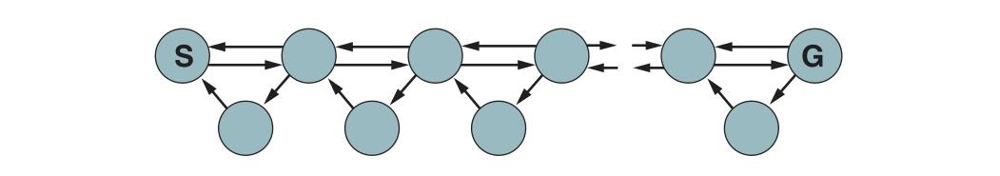
افزودن حافظه به تپهنوردی بهجای تصادفیبودن، رویکرد مؤثرتری از آب درمیآید. ایدهٔ پایه ذخیرهٔ «بهترین تخمین کنونی» H(s) از هزینهٔ رسیدن به هدف از هر حالت بازدیدشده است. H(s) در آغاز فقط تخمین اکتشافی h(s) است و با کسب تجربه توسط عامل در فضای حالت بهروز میشود. شکل ۴.۲۳ مثال سادهای در فضای حالت یکبعدی نشان میدهد. در (الف)، عامل به نظر میرسد در کمینهٔ محلی تختِ حالت قرمز گیر کرده. بهجای ماندن همانجا، عامل باید بهظاهر بهترین مسیر به هدف را با توجه به تخمینهای هزینهٔ کنونی همسایههایش دنبال کند. هزینهٔ تخمینی رسیدن به هدف از طریق همسایهٔ s′، هزینهٔ رسیدن به s′ بهعلاوهٔ هزینهٔ تخمینی رسیدن به هدف از آنجاست — یعنی c(s,a,s′) + H(s′). در مثال، دو کنش با هزینههای تخمینی 1+9 به چپ و 1+2 به راست هست، پس بهتر مینماید به راست حرکت کنیم. در (ب) روشن است تخمین هزینهٔ ۲ برای حالت قرمزِ (الف) بیش از حد خوشبینانه بود. چون بهترین حرکت ۱ هزینه داشت و به حالتی رساند که دستکم ۲ گام با هدف فاصله دارد، حالت قرمز باید دستکم ۳ گام با هدف فاصله داشته باشد، پس H آن باید متناسباً بهروز شود، چنانکه در شکل ۴.۲۳(ب). با ادامهٔ این فرایند، عامل دو بار دیگر رفتوبرگشت میکند و هر بار H را بهروز و کمینهٔ محلی را «صاف» میکند تا آنکه به راست میگریزد.
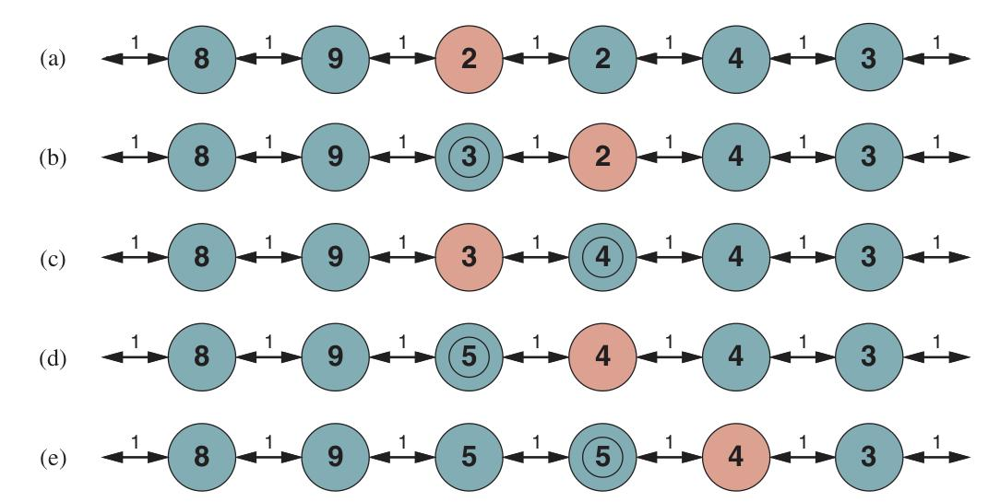
عاملی که این طرح را پیاده میکند، «یادگیری A∗ زمان-واقعی» (Learning Real-Time A∗، یا LRTA∗) نامیده میشود و در شکل ۴.۲۴ نشان داده شده. مانند ONLINE-DFS-AGENT، نقشهای از محیط در جدول result میسازد. تخمین هزینهٔ حالتی را که تازه ترک کرده بهروز میکند و سپس حرکتِ «ظاهراً بهترین» را بر اساس تخمینهای هزینهٔ کنونیاش برمیگزیند. یک جزئیات مهم آن است که کنشهایی که هنوز در حالت s آزموده نشدهاند، همیشه فرض میشود بلافاصله با کمترین هزینهٔ ممکن، یعنی h(s)، به هدف میانجامند. این «خوشبینی در شرایط عدم قطعیت» (Optimism Under Uncertainty) عامل را به کاوش مسیرهای تازه و بالقوه امیدوارکننده تشویق میکند.
function LRTA*-AGENT(problem, s′, h) returns an action
persistent:
s, a, the previous state and action, initially null
result, a table mapping (s, a) to s′, initially empty
H, a table mapping s to a cost estimate, initially empty
if IS-GOAL(s′) then return stop
if s′ is a new state (not in H) then H[s′] ← h(s′)
if s is not null then
result[s, a] ← s′
H[s] ← min_{b∈ACTIONS(s)} LRTA*-COST(s, b, result[s, b], H)
a ← argmin_{b∈ACTIONS(s′)} LRTA*-COST(problem, s′, b, result[s′, b], H)
s ← s′
return aعامل LRTA∗ تضمینشده در هر محیط متناهیِ بهشکل ایمن قابل کاوش هدفی مییابد. برخلاف A∗ اما برای فضاهای حالت بینهایت کامل نیست — مواردی هست که میتواند بینهایت به گمراهی کشیده شود. میتواند محیطی با n حالت را در بدترین حالت در O(n²) گام کاوش کند، اما اغلب بسیار بهتر عمل میکند. عامل LRTA∗ فقط یکی از خانوادهٔ بزرگ عاملهای آنلاینی است که میتوان با مشخص کردن قاعدهٔ انتخاب کنش و قاعدهٔ بهروزرسانی به شیوههای گوناگون تعریف کرد. این خانواده را که در اصل برای محیطهای تصادفی توسعه یافته، در فصل ۲۲ بحث میکنیم.
نادانی آغازین عاملهای جستجوی آنلاین فرصتهای فراوانی برای یادگیری فراهم میکند. نخست، عاملها «نقشهٔ» محیط را میآموزند — دقیقتر، پیامد هر کنش در هر حالت را — صرفاً با ثبت هر یک از تجربههایشان. دوم، عاملهای جستجوی محلی تخمینهای دقیقتری از هزینهٔ هر حالت با استفاده از قواعد بهروزرسانی محلی، مانند LRTA∗، به دست میآورند. در فصل ۲۲ نشان میدهیم این بهروزرسانیها سرانجام برای هر حالت به مقادیر دقیق همگرا میشوند، به شرط آنکه عامل فضای حالت را بهشیوهٔ درست کاوش کند. وقتی مقادیر دقیق شناخته شدند، تصمیمهای بهینه را میتوان صرفاً با حرکت به کمهزینهترین جانشین گرفت — یعنی تپهنوردی ناب آنگاه راهبردی بهینه است.
اگر توصیهمان را برای دنبالکردن رفتار ONLINE-DFS-AGENT در محیط شکل ۴.۱۹ اجرا کرده باشید، متوجه شدهاید عامل چندان باهوش نیست. برای نمونه، پس از آنکه دیده کنش Up از (1,1) به (1,2) میرود، عامل هنوز هیچ ایدهای ندارد که کنش Down به (1,1) بازمیگردد یا کنش Up نیز از (2,1) به (2,2)، از (2,2) به (2,3) و الی آخر میرود. در حالت کلی، میخواهیم عامل بیاموزد که Up مختصهٔ y را زیاد میکند مگر آنکه دیواری سر راه باشد، Down آن را کم میکند، و الی آخر. برای اینکه این رخ دهد، به دو چیز نیاز داریم. نخست، به بازنمایی صوری و بهصراحت دستکاریشدنی برای اینگونه قواعد عمومی نیاز داریم؛ تاکنون اطلاعات را درون جعبهٔ سیاهی به نام تابع RESULT پنهان کردهایم. فصلهای ۸ تا ۱۱ به این مسئله اختصاص دارند. دوم، به الگوریتمهایی نیاز داریم که بتوانند از مشاهدههای خاصِ عامل، قواعد عمومی مناسبی بسازند. اینها در فصل ۱۹ پوشش داده میشوند.
راههای متعددی برای این کار هست که همگی زیر عنوان جستجوی افزایشی (Incremental Search) میگنجند. میتوانیم درخت جستجو را در حافظه نگه داریم و بخشهایی از آن را که در مسئلهٔ تازه تغییر نکردهاند دوباره استفاده کنیم. میتوانیم مقادیر اکتشافی h را نگه داریم و با کسب اطلاعات تازه — چه بهسبب تغییر جهان یا محاسبهٔ تخمین بهتر — آنها را بهروز کنیم. یا میتوانیم مقادیر بهترینمسیر g را نگه داریم و از آنها برای سرهمکردن راهحل تازه استفاده کنیم و هنگام تغییر جهان آنها را بهروز کنیم.
این فصل الگوریتمهای جستجو را برای مسائلِ محیطهای تا حدی قابل مشاهده، ناجبرگرایانه، ناشناخته و پیوسته بررسی کرد.
فنون جستجوی محلی تاریخچهٔ بلندی در ریاضیات و علوم رایانه دارند. در واقع، روش نیوتن–رافسون (نیوتن، ۱۶۷۱؛ رافسون، ۱۶۹۰) را میتوان روش جستجوی محلی بسیار کارآمدی برای فضاهای پیوستهای دانست که اطلاعات گرادیان در آنها در دسترس است. برنت (۱۹۷۳) مرجع کلاسیکی برای روشهای بهینهسازی یکبعدی است. کالج (۲۰۰۸) و نیلدر و مید (۱۹۶۵) بر الگوریتمهای بهینهسازی چندبعدی بدون مشتق تمرکز دارند؛ این روشها در علوم تجربی (مانند فیزیک ذرات) و نیز در یادگیری ماشین (مانند تنظیم فراپارامترها) کاربرد دارند. نِدرر (۲۰۰۹) و رایت (۲۰۰۶) مرورهایی دربارهٔ مسائل بهینهسازی مقید و الگوریتمهای مربوطه ارائه میدهند. برای توابعی که مشتقپذیرند، الگوریتمهای گرادیان در متون متعددی پوشش داده شدهاند (لونبرگر، ۲۰۰۳؛ بوید و وندنبرگ، ۲۰۰۴؛ نوسدال و رایت، ۲۰۰۶)، و پیشرفتهای اخیر در یادگیری عمیق (فصل ۲۱) روشهای نزول گرادیان تصادفی را بسیار بهبود بخشیده است (بوتبو و همکاران، ۲۰۱۸). فنون مربوطه عبارتاند از روشهای نیوتن، شبهنیوتن و روشهای گرادیان مزدوج که در متون استاندارد پوشش داده شدهاند، و حساب تغییرات.
فنون پایه توسط بیشاپ (۱۹۹۵) خوب توضیح داده شده؛ پرس و همکاران (۲۰۰۷) گسترهٔ وسیعی از الگوریتمها را پوشش میدهند و نرمافزار کاری فراهم میکنند.
پژوهشگران برای الگوریتمهای جستجو و بهینهسازی از گسترهٔ وسیعی از حوزههای مطالعاتی الهام گرفتهاند: متالورژی (بازپخت شبیهسازیشده)؛ زیستشناسی (الگوریتمهای ژنتیک)؛ علوم اعصاب (شبکههای عصبی)؛ کوهنوردی (تپهنوردی)؛ اقتصاد (الگوریتمهای بازارمحور (دیاس و همکاران، ۲۰۰۶))؛ فیزیک (دستههای ذره (لی و یائو، ۲۰۱۲) و شیشههای اسپینی (مزارد و همکاران، ۱۹۸۷))؛ رفتار جانوری (یادگیری تقویتی، بهینهسازهای گرگ خاکستری (میرجلیلی و لوئیس، ۲۰۱۴))؛ پرندهشناسی (جستجوی فاخته (یانگ و دب، ۲۰۱۴))؛ حشرهشناسی (بهینهسازی کلونی مورچه (دوریگو و همکاران، ۲۰۰۸)، کلونی زنبور (کارابوگا و باستورک، ۲۰۰۷)، کرم شبتاب (یانگ، ۲۰۰۹) و کرم شبتابتاب (کریشنانند و گوس، ۲۰۰۹))؛ و دیگران.
برنامهریزی خطی (LP) نخستین بار بهصورت نظاممند توسط ریاضیدان لئونید کانتوروویچ (۱۹۳۹) مطالعه شد. این یکی از نخستین کاربردهای رایانه بود؛ الگوریتم سیمپلکس (دانتزیگ، ۱۹۴۹) با وجود پیچیدگی نماییِ بدترین حالت همچنان استفاده میشود. کارمارکار (۱۹۸۴) خانوادهٔ بسیار کارآمدترِ روشهای نقطهٔ داخلی را توسعه داد که نستروف و نمویروسکی (۱۹۹۴) نشان دادند برای ردهٔ عمومیتر مسائل بهینهسازی محدب پیچیدگی چندجملهای دارد. مقدمههای عالی برای بهینهسازی محدب توسط بنتال و نمویروسکی (۲۰۰۱) و بوید و وندنبرگ (۲۰۰۴) ارائه شده.
کار سول رایت (۱۹۳۱) بر مفهوم چشمانداز برازش پیشآهنگ مهمی برای توسعهٔ الگوریتمهای ژنتیک بود. در دههٔ ۱۹۵۰، چند آماردان، از جمله باکس (۱۹۵۷) و فریدمن (۱۹۵۹)، از فنون تکاملی برای مسائل بهینهسازی استفاده کردند، اما تا آنکه رشنبرگ (۱۹۶۵) راهبردهای تکاملی را برای حل مسائل بهینهسازی ایرفویلها معرفی کرد، رویکرد محبوبیت نیافت. در دهههای ۱۹۶۰ و ۱۹۷۰، جان هالند (۱۹۷۵) الگوریتمهای ژنتیک را تبلیغ کرد، هم بهعنوان ابزار بهینهسازی مفید و هم بهعنوان روشی برای گسترش فهم ما از سازگاری (هالند، ۱۹۹۵).
جنبش حیات مصنوعی (لنگتون، ۱۹۹۵) این ایده را یک گام فراتر برد و محصولات الگوریتمهای ژنتیک را جانداران دید نه راهحلهای مسئله. اثر بالدوینِ بحثشده در فصل تقریباً همزمان توسط کانوی لوید مورگان (۱۸۹۶) و جیمز بالدوین (۱۸۹۶) پیشنهاد شد. شبیهسازیهای رایانهای به روشنکردن پیامدهایش کمک کردهاند (هینتون و نولان، ۱۹۸۷؛ اکلی و لیتمن، ۱۹۹۱؛ مورگان و گریفیتس، ۲۰۱۵). اسمیت و ساتماری (۱۹۹۹)، ریدلی (۲۰۰۴) و کارول (۲۰۰۷) زمینهٔ عمومی تکامل را ارائه میدهند.
بیشتر مقایسههای الگوریتمهای ژنتیک با رویکردهای دیگر (بهویژه تپهنوردی تصادفی) نشان دادهاند الگوریتمهای ژنتیک کندتر همگرا میشوند (اوریلی و اوپاخر، ۱۹۹۴؛ میچل و همکاران، ۱۹۹۶؛ جوئلز و واتنبرگ، ۱۹۹۶؛ بالویا، ۱۹۹۷). چنین یافتههایی در جامعهٔ GA جهانشمول محبوب نیستند، اما تلاشهای اخیر درون آن جامعه برای فهم جستجوی جمعیتمحور بهعنوان شکل تقریبی یادگیری بیزی (فصل ۲۰ را ببینید) ممکن است به نزدیککردن این حوزه به منتقدانش کمک کند (پلیکان و همکاران، ۱۹۹۹). نظریهٔ سامانههای دینامیکی درجهدوم نیز ممکن است عملکرد GAها را توضیح دهد (ربانی و همکاران، ۱۹۹۸). کاربردهای عملی چشمگیری برای GAها هست، در حوزههایی بهاندازهٔ طراحی آنتن (لون و همکاران، ۲۰۰۱)، طراحی بهکمک رایانه (رنر و اکارت، ۲۰۰۳)، مدلهای اقلیمی (استانیسواسکا و همکاران، ۲۰۱۵)، پزشکی (غاهری و همکاران، ۲۰۱۵) و طراحی شبکههای عصبی عمیق (میکولاینن و همکاران، ۲۰۱۹).
حوزهٔ برنامهنویسی ژنتیک زیرحوزهای از الگوریتمهای ژنتیک است که در آن بازنماییها برنامهاند نه رشتههای بیتی. برنامهها بهصورت درختهای نحوی بازنمایی میشوند، یا در زبان برنامهنویسی استاندارد یا در قالبهای ویژهطراحیشده برای بازنمایی مدارهای الکترونیکی، کنترلگرهای ربات و مانند آن. تلاقی شامل بههمدوختن زیردرختها چنان است که تضمین شود فرزندان عبارتهای خوشساختاند. علاقه به برنامهنویسی ژنتیک توسط کار جان کوزا (۱۹۹۲، ۱۹۹۴) برانگیخته شد، اما دستکم به آزمایشهای آغازین با کد ماشین توسط فریدبرگ (۱۹۵۸) و با اتوماتاهای متناهی توسط فوگل و همکاران (۱۹۶۶) بازمیگردد. مانند الگوریتمهای ژنتیک، دربارهٔ اثربخشی این فن بحث هست. کوزا و همکاران (۱۹۹۹) آزمایشهایی در استفاده از برنامهنویسی ژنتیک برای طراحی دستگاههای مداری توصیف میکنند.
ژورنالهای Evolutionary Computation و IEEE Transactions on Evolutionary Computation الگوریتمهای تکاملی را پوشش میدهند؛ مقالهها همچنین در Complex Systems، Adaptive Behavior و Artificial Life یافت میشوند. کنفرانس اصلی، کنفرانس محاسبات ژنتیک و تکاملی (GECCO) است. متون مرور خوب الگوریتمهای ژنتیک شامل میچل (۱۹۹۶)، فوگل (۲۰۰۰)، لنگدون و پولی (۲۰۰۲) و پولی و همکاران (۲۰۰۸) است.
پیشبینیناپذیری و مشاهدهناپذیری تا حدیِ محیطهای واقعی در پروژههای رباتیک اولیهای که از فنون برنامهریزی استفاده میکردند، از جمله شیکی (فایکز و همکاران، ۱۹۷۲) و فردی (مایکی، ۱۹۷۲)، زود شناخته شد. مسائل پس از انتشار مقالهٔ تأثیرگذار مکدرموت (۱۹۷۸) با عنوان «برنامهریزی و کنش» توجه بیشتری گرفت.
نخستین کاری که بهصراحت از درختهای AND–OR استفاده کرد به نظر میرسد برنامهٔ SAINT اسلگل برای انتگرالگیری نمادین بوده باشد که در فصل ۱ یاد شد. آمارل (۱۹۶۷) این ایده را بر اثبات قضیهٔ گزارهای اعمال کرد، موضوعی که در فصل ۷ بحث میشود، و الگوریتم جستجویی شبیه AND-OR-GRAPH-SEARCH معرفی کرد. الگوریتم توسط نیلسون (۱۹۷۱) بیشتر توسعه یافت، که همچنین AO∗ را توصیف کرد — که چنانکه نامش میگوید، راهحلهای بهینه مییابد. AO∗ توسط مارتلی و مونتاناری (۱۹۷۳) بیشتر بهبود یافت.
AO∗ الگوریتمی بالا-به-پایین است؛ تعمیم پایین-به-بالای A∗، A∗LD برای A∗ مشتقِ سبکترین (فلزنسوالب و مکآلیستر، ۲۰۰۷) است. علاقه به جستجوی AND–OR در اوایل دههٔ ۲۰۰۰ احیا شد، با الگوریتمهای تازه برای یافتن راهحلهای چرخهای (خیمنز و توراس، ۲۰۰۰؛ هانسن و زیلبرشتاین، ۲۰۰۱) و فنون تازهای که از برنامهنویسی پویا الهام گرفتهاند (بونت و گفنر، ۲۰۰۵).
ایدهٔ تبدیل مسائل تا حدی قابل مشاهده به مسائل حالت باور از آستروم (۱۹۶۵) برای حالت بسیار پیچیدهتر عدم قطعیت احتمالاتی (فصل ۱۷ را ببینید) سرچشمه گرفت. اردمان و میسون (۱۹۸۸) مسئلهٔ دستکاری رباتیک بدون حسگر را با شکل پیوستهای از جستجوی حالت باور مطالعه کردند. آنها نشان دادند ممکن است قطعهای روی میز را از موقعیت آغازین دلخواه با توالی خوبطراحیشدهای از کنشهای کجکردن جهت دهیم. روشهای عملیتری که بر سلسلهای از موانع موربِ دقیقاً جهتدار در عرض نوار نقاله مبتنیاند، از همان بینشهای الگوریتمی استفاده میکنند (ویگلی و همکاران، ۱۹۹۶).
رویکرد حالت باور در زمینهٔ مسائل جستجوی بیحسگر و تا حدی قابل مشاهده توسط جنزِرت و نوربخش (۱۹۹۳) بازآفرینی شد. کار بیشتری بر مسائل بیحسگر در جامعهٔ برنامهریزی مبتنی بر منطق انجام شد (گلدمن و بادی، ۱۹۹۶؛ اسمیت و ولد، ۱۹۹۸). این کار بر بازنماییهای موجز برای حالتهای باور تأکید داشته، چنانکه در فصل ۱۱ توضیح داده شده. بونت و گفنر (۲۰۰۰) نخستین اکتشافیهای مؤثر برای جستجوی حالت باور را معرفی کردند؛ اینها توسط برایس و همکاران (۲۰۰۶) پالایش شدند. رویکرد افزایشی به جستجوی حالت باور، که در آن راهحلها بهصورت افزایشی برای زیرمجموعههایی از حالتها درون هر حالت باور ساخته میشوند، در ادبیات برنامهریزی توسط کورین و همکاران (۲۰۰۲) مطالعه شد؛ چند الگوریتم افزایشی تازه برای مسائل ناجبرگرایانه و تا حدی قابل مشاهده توسط راسل و ولف (۲۰۰۵) معرفی شد. ارجاعهای اضافی برای برنامهریزی در محیطهای تصادفی تا حدی قابل مشاهده در فصل ۱۷ میآید.
الگوریتمهای کاوش فضاهای حالت ناشناخته برای قرنها مورد علاقه بودهاند. جستجوی عمق-اول در هزارتوی برگشتپذیر را میتوان با نگهداشتن دست چپ روی دیوار پیاده کرد؛ حلقهها را میتوان با علامتگذاری هر تقاطع اجتناب کرد. مسئلهٔ عمومیتر کاوش گرافهای اویلری (یعنی گرافهایی که در آنها هر گره شمار برابری یال ورودی و خروجی دارد) توسط الگوریتمی از هیرهولزر (۱۸۷۳) حل شد.
نخستین مطالعهٔ الگوریتمی کامل مسئلهٔ کاوش برای گرافهای دلخواه توسط دنگ و پاپادیمیتریو (۱۹۹۰) انجام شد که الگوریتمی کاملاً عمومی توسعه دادند اما نشان دادند هیچ نسبت رقابتی کرانداری برای کاوش گراف عمومی ممکن نیست. پاپادیمیتریو و یاناکاکیس (۱۹۹۱) پرسش یافتن مسیرهای هدف را در محیطهای برنامهریزی مسیر هندسی (که همهٔ کنشها برگشتپذیرند) بررسی کردند. آنها نشان دادند با موانع مربعی نسبت رقابتی کوچکی دستیافتنی است، اما با موانع مستطیلی عمومی هیچ نسبت کرانداری ممکن نیست. (شکل ۴.۲۰ را ببینید.) در محیط پویا، حالت جهان میتواند بدون هیچ کنشی از عامل خودبهخود تغییر کند. برای نمونه، عامل میتواند مسیر رانندگی بهینهای از A به B برنامهریزی کند، اما تصادفی یا ترافیک ساعت شلوغیِ غیرعادی بد میتواند برنامه را خراب کند. الگوریتمهای جستجوی افزایشی مانند A∗ مادامالعمر (کونیگ و همکاران، ۲۰۰۴) و D∗Lite (کونیگ و لیخاچف، ۲۰۰۲) با این وضعیت سروکار دارند.
الگوریتم LRTA∗ توسط کورف (۱۹۹۰) بهعنوان بخشی از پژوهشی در جستجوی زمان-واقعی برای محیطهایی توسعه یافت که عامل باید پس از جستجو فقط برای مدت ثابتی کنش کند (وضعیتی رایج در بازیهای دو-نفره). LRTA∗ در واقع حالت خاصی از الگوریتمهای یادگیری تقویتی برای محیطهای تصادفی است (بارتو و همکاران، ۱۹۹۵). سیاست خوشبینی در شرایط عدم قطعیتش — همیشه به سوی نزدیکترین حالت بازدیدنشده رفتن — میتواند به الگوی کاوشی بینجامد که در حالت بیاطلاع از جستجوی عمق-اول ساده ناکارآمدتر است (کونیگ، ۲۰۰۰). داسگوپتا و همکاران (۱۹۹۴) نشان میدهند جستجوی تعمیق تکراری آنلاین برای یافتن هدف در درخت یکنواخت بدون اطلاعات اکتشافی بهینهکاراست.
¹ لوبی و همکاران (۱۹۹۳) پیشنهاد میکنند پس از شمار ثابتی گام، راهاندازی مجدد انجام دهیم و نشان میدهند این میتواند بسیار کارآمدتر از رهاکردن هر جستجو برای ادامهٔ بینهایت باشد.
² دانش بردارها، ماتریسها و مشتقها برای این بخش مفید است (پیوست الف را ببینید).
³ در حالت کلی، بهروزرسانی نیوتن–رافسون را میتوان چنان دید که سطحی درجهدوم را بر f در x برازش میدهد و سپس مستقیم به کمینهٔ آن سطح میرود — که اگر f درجهدوم باشد، همان کمینهٔ f است.
⁴ مجموعهٔ S از نقطهها محدب است اگر خطِ واصل هر دو نقطه در S نیز در S باشد. تابع محدب تابعی است که فضای «بالای» آن مجموعهٔ محدبی بسازد؛ طبق تعریف، توابع محدب هیچ کمینهٔ محلی (در برابر سراسری) ندارند.
⁵ فرض میکنیم بیشتر خوانندگان با مسائل مشابه روبهرویند و میتوانند با عامل ما همدردی کنند. از دارندگان لوازم تمیزکنندهٔ مدرن و کارآمد که نمیتوانند از این ابزار آموزشی بهره ببرند پوزش میخواهیم.
⁶ در محیط کاملاً قابل مشاهده، هر حالت باور شامل یک حالت فیزیکی است. پس میتوانیم الگوریتمهای فصل ۳ را جستجو در فضای حالت باوری از حالتهای باورِ تکی ببینیم.
⁷ پوزشهای معمول به کسانی که با اثر کودکان کوچک بر محیط آشنا نیستند.
⁸ اصطلاح «آنلاین» در اینجا به الگوریتمهایی اشاره دارد که باید ورودی را هنگام دریافت پردازش کنند نه آنکه منتظر در دسترسشدن کل مجموعهدادهٔ ورودی بمانند. این کاربرد «آنلاین» با مفهوم «داشتن اتصال اینترنت» بیربط است.
⁹ گامهای تصادفی بر شبکههای بینهایت یکبعدی و دوبعدی کاملاند. بر شبکهٔ سهبعدی، احتمال بازگشتِ هرگزِ گام به نقطهٔ آغازین فقط حدود ۰٫۳۴۰۵ است (هیوز، ۱۹۹۵).